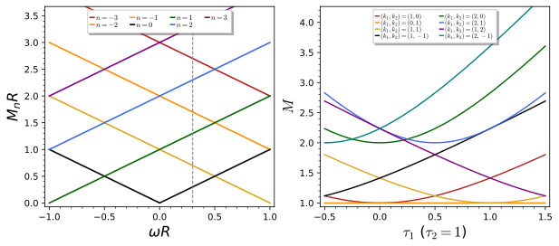
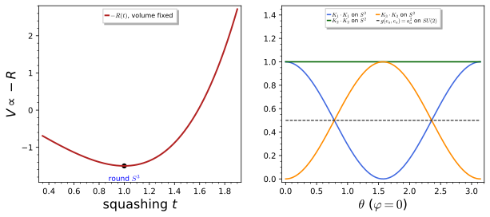
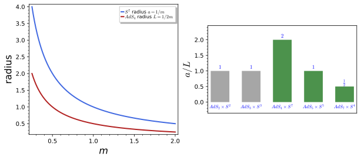
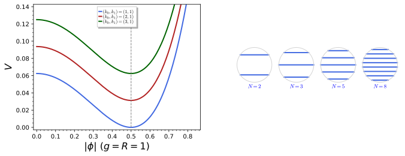

Consistent reductions
A dimensional reduction replaces a higher-dimensional field theory by a lower-dimensional one that keeps finitely many fields, and the question that decides whether the lower-dimensional theory is trustworthy is whether the truncation is consistent: every solution of the truncated equations must lift to a solution of the full ones. Part III met the simplest answer. On a circle the zero modes are the singlets of the U(1) of translations, products of singlets never source the charged massive modes, and the Kaluza-Klein truncation is consistent (Definition 8 of Gauge symmetry and the Kaluza-Klein tower). Part IV met the first failure: the non-abelian ansatz on a sphere keeps the gauge fields of the isometry group, but the higher-dimensional Einstein equations then depend on the internal point, and the truncation to the massless sector is inconsistent (Definition 3 of The reduced theory). Part V replaced the metric by gauge fields and asked the fields to be symmetric under the isometries up to gauge transformations, which is the coset space dimensional reduction (CSDR) of Forgács and Manton.
This chapter surveys the reductions that are consistent and explains why. Toroidal and Scherk-Schwarz reductions generalises the circle to the torus T^n, with its moduli and its U(1)^n gauge fields, and then twists the periodicity of the fields by a symmetry, which shifts the Kaluza-Klein masses to |n/R + \omega| and turns the reduced theory into a gauged supergravity. Group manifolds and the consistency problem reduces on a group G with its left-invariant forms, checks the Maurer-Cartan equations of SU(2), and shows why the left-invariant truncation is consistent while the sphere truncation of pure gravity of Part IV is not: the first keeps singlets of a symmetry, the second does not. Sphere reductions in supergravity treats the Freund-Rubin vacuum AdS_4 \times S^7, shows that its explicit metric solves the eleven-dimensional field equations, and outlines the exceptional consistent truncations on S^7, S^4 and S^5 and the exceptional field theory that explains them. Symmetric-field schemes compared puts CSDR, Scherk-Schwarz reduction, the equivariant reduction of Dolan and Szabo and fuzzy-sphere reductions side by side and works out the equivariant potential with its minimum. The survey quotes the literature for the deep theorems and derives every formula that reduces to a finite computation.
Toroidal and Scherk-Schwarz reductions
The circle of Part III is the one-dimensional torus, and nothing in its reduction used that it had one dimension only: the zero modes are the fields invariant under translations, and the translations of T^n form the abelian group U(1)^n. This section reduces on T^n, counts the fields that survive, computes the Kaluza-Klein spectrum and its dependence on the shape of the torus, and then introduces the twist of Scherk and Schwarz, in which a field returns to itself around a cycle only up to a symmetry transformation. The figure shows the two spectra: on the left the twisted masses |n + \omega R|/R as the twist varies, on the right the masses of a two-torus as its shape varies.

figures/vcr_scherk_schwarz.sage.
Interactive figure (drag to rotate or zoom); the static version is above.
Reduction on a torus
The ansatz of Part III wrote the five-dimensional metric with a four-dimensional metric, one vector and one scalar, all independent of the circle coordinate. On a torus of n dimensions the same construction runs with n periodic coordinates, and the single scalar becomes a matrix of scalars that records the sizes of the circles and the angles between them.
Definition 1 (Toroidal reduction) Let the internal space be the torus T^n = \mathbb{R}^n/2\pi\mathbb{Z}^n with periodic coordinates y^m \sim y^m + 2\pi, m = 1, \dots, n. The toroidal reduction of a (4 + n)-dimensional metric is the ansatz d\hat s^2 = g_{\mu\nu}(x)\,dx^\mu dx^\nu - G_{mn}(x)\left(dy^m + A^m_\mu(x)\,dx^\mu\right)\left(dy^n + A^n_\nu(x)\,dx^\nu\right), \tag{1} in the signature of Coordinates, indices and signature, with G_{mn} a positive-definite symmetric matrix and every field independent of y. It keeps a four-dimensional metric, n abelian gauge fields A^m_\mu and the \tfrac12n(n + 1) scalars G_{mn}, the moduli of the torus. The isometries y^m \to y^m + c^m form U(1)^n; the coordinate changes y^m \to y^m + \lambda^m(x) act as gauge transformations A^m_\mu \to A^m_\mu - \partial_\mu\lambda^m, and the truncation keeps exactly the U(1)^n-invariant modes, which is why it is consistent (Duff et al. 2025, sec. 7; Hohm and Samtleben 2014, sec. 1).
Veriphy. Pending.
Lean. Pending.
Sage. Pending.
The first example checks that nothing new happens for n = 1: the torus ansatz is the Kaluza-Klein ansatz of Part III with the circle coordinate rescaled. It also fixes the dictionary between the two normalisations of the circle.
Example 1 (The circle again) For n = 1, Equation 1 reads g_{\mu\nu}dx^\mu dx^\nu - G_{11}(dy + A^1_\mu dx^\mu)^2 with y \sim y + 2\pi. The coordinate y' = Ry of Definition 2 of The Kaluza-Klein reduction has period 2\pi R, and \phi^2(dy' + A_\mu dx^\mu)^2 = \phi^2R^2(dy + A_\mu dx^\mu/R)^2, so G_{11} = \phi^2R^2 and A^1_\mu = A_\mu/R: the modulus G_{11} is the squared radius of the circle measured in the higher-dimensional metric.
On a two-torus the three moduli have a geometric meaning that will organise the spectrum. They are the area and the shape of the parallelogram whose opposite sides are identified, and the shape is a point of the upper half-plane.
Example 2 (The two-torus) For n = 2 the ansatz keeps two vectors and three scalars. Write G = \frac{A}{\tau_2}\begin{pmatrix} 1 & \tau_1 \\ \tau_1 & |\tau|^2\end{pmatrix}, \qquad \tau = \tau_1 + i\tau_2,\ \tau_2 > 0, \qquad \det G = A^2 , \tag{2} so that the area of the torus is 4\pi^2A and \tau, the complex structure, is the ratio of the two periods of the lattice. A rectangular torus with radii R_1, R_2 has G = \operatorname{diag}(R_1^2, R_2^2), that is, A = R_1R_2 and \tau = iR_2/R_1.
Eleven-dimensional supergravity (Definition 24 of Supersymmetry and supergravity) reduced on a seven-torus gives the maximal supergravity in four dimensions. Counting its scalars shows a first trace of the hidden symmetries that the sphere reductions of this chapter will need.
Example 3 (Seventy scalars from T^7) On T^7 the metric gives 28 moduli G_{mn} and 7 vectors; the three-form C gives 35 scalars C_{mnp}, 21 vectors C_{\mu mn} and 7 two-forms C_{\mu\nu m}, which in four dimensions are dual to scalars. The total of 28 + 35 + 7 = 70 scalars is the dimension of E_{7(7)}/SU(8), the scalar manifold of N = 8 supergravity, and the 28 vectors with their magnetic duals fill the 56 of E_7 (Exercise 3): the toroidal reduction hides a symmetry far larger than the GL(7) of the torus.
The first exercise counts physical degrees of freedom on both sides of the reduction. A massless field in d dimensions has a fixed number of polarisations, and the reduction must neither create nor destroy them.
Exercise 1 (Counting polarisations) A graviton in D dimensions has \tfrac12D(D - 3) polarisations and a vector in d dimensions has d - 2. Show that the fields kept by Definition 1 with D = d + n carry exactly the polarisations of the D-dimensional graviton, and check the cases D = 5, 10, 11 with d = 4.
The kept fields carry \tfrac12d(d - 3) + n(d - 2) + \tfrac12n(n + 1) polarisations, and expanding \tfrac12(d + n)(d + n - 3) gives the same polynomial. For D = 11, d = 4: 44 = 2 + 14 + 28:
d, n = var("d n")
D = d + n
lhs = D * (D - 3) / 2
rhs = d * (d - 3) / 2 + n * (d - 2) + n * (n + 1) / 2
print("D(D-3)/2 - [d(d-3)/2 + n(d-2) + n(n+1)/2] =", (lhs - rhs).expand())
for DD in [5, 10, 11]:
nn = DD - 4
print("D = %d on T^%d: %d = 2 (graviton) + %d (vectors) + %d (scalars) = %d" % (DD, nn, DD * (DD - 3) // 2, 2 * nn, nn * (nn + 1) // 2, 2 + 2 * nn + nn * (nn + 1) // 2))Output:
D(D-3)/2 - [d(d-3)/2 + n(d-2) + n(n+1)/2] = 0
D = 5 on T^1: 5 = 2 (graviton) + 2 (vectors) + 1 (scalars) = 5
D = 10 on T^6: 35 = 2 (graviton) + 12 (vectors) + 21 (scalars) = 35
D = 11 on T^7: 44 = 2 (graviton) + 14 (vectors) + 28 (scalars) = 44The gauge transformations of the reduced vectors come from coordinate changes of the torus that depend on spacetime. The second exercise derives them, which generalises the circle computation of Part III to n directions.
Exercise 2 (Gauge transformations from the torus) Show that the change of coordinates y^m \to y'^m = y^m + \lambda^m(x) preserves the form Equation 1 with A'^m_\mu = A^m_\mu - \partial_\mu\lambda^m and g'_{\mu\nu} = g_{\mu\nu}, G'_{mn} = G_{mn}. Why must \lambda^m be independent of y?
With dy^m = dy'^m - \partial_\mu\lambda^m dx^\mu the combination dy^m + A^m_\mu dx^\mu becomes dy'^m + (A^m_\mu - \partial_\mu\lambda^m)dx^\mu, and the rest of the metric is untouched. A y-dependent \lambda^m would bring \partial_n\lambda^m into G_{mn} and make the new fields depend on y; the transformations that preserve the ansatz are those that commute with the U(1)^n translations, as in Definition 3 of Gauge symmetry and the Kaluza-Klein tower.
The last exercise checks the count of Example 3 against the dimensions of the exceptional group, computed from its root system. It asks the reader to identify where each scalar comes from.
Exercise 3 (The scalar manifold E_7/SU(8)) Compute \dim E_7 = 133 and \dim SU(8) = 63 from their root systems, and compare \dim E_7 - \dim SU(8) with the number of scalars of eleven-dimensional supergravity on T^7, listing the contributions of the metric and of the three form.
E_7 has 126 roots and rank 7, SU(8) = A_7 has 56 roots and rank 7, so the coset has dimension 70; the metric gives \dim GL(7)/SO(7) = 49 - 21 = 28, C_{mnp} gives \binom73 = 35 and the dualised two-forms 7:
dimE7 = len(RootSystem(["E", 7]).root_lattice().roots()) + 7
dimSU8 = len(RootSystem(["A", 7]).root_lattice().roots()) + 7
moduli = 7 ^ 2 - binomial(7, 2)
print("dim E7 =", dimE7, "; dim SU(8) =", dimSU8, "; dim E7/SU(8) =", dimE7 - dimSU8)
print("metric moduli", moduli, "+ C_mnp", binomial(7, 3), "+ dualised C_mu nu m", 7, "=", moduli + binomial(7, 3) + 7)
print("vectors: 7 (metric) + 21 (C_mu mn) =", 7 + binomial(7, 2), "; with their 28 magnetic duals they fill the 56 of E7")Output:
dim E7 = 133 ; dim SU(8) = 63 ; dim E7/SU(8) = 70
metric moduli 28 + C_mnp 35 + dualised C_mu nu m 7 = 70
vectors: 7 (metric) + 21 (C_mu mn) = 28 ; with their 28 magnetic duals they fill the 56 of E7The Kaluza-Klein spectrum of a torus
The modes that the toroidal truncation discards are the Fourier modes e^{ik_my^m} with k \neq 0, and their masses depend on the moduli. The proposition computes this dependence and shows that tori related by a change of lattice basis have the same spectrum, which is the reason the moduli space is a quotient by SL(n, \mathbb{Z}).
Proposition 1 (The spectrum of a torus) A massless field on the torus of Definition 1 (with A^m_\mu = 0) expanded as \sum_k\phi_k(x)e^{ik_my^m}, k \in \mathbb{Z}^n, gives four-dimensional fields of mass M_k^2 = G^{mn}k_mk_n, \qquad\text{and for } n = 2:\quad M_k^2 = \frac{|k_2 - k_1\tau|^2}{A\,\tau_2}, \tag{3} with G^{mn} the inverse of G_{mn} and the moduli of Equation 2. The mode k has charges k_m under the U(1)^n gauge fields. The spectrum is invariant under \tau \to \tau + 1 with (k_1, k_2) \to (k_1, k_2 + k_1) and under \tau \to -1/\tau with (k_1, k_2) \to (-k_2, k_1), which generate SL(2, \mathbb{Z}). The levels M^2 = 1, 2, 5, 25 of the square torus have the degeneracies 4, 4, 8, 12.
Veriphy. Pending.
Lean. Pending.
Sage. Checked by exact computation in figures/vcr_scherk_schwarz.sage, with the degeneracies of the square torus.
A rectangular torus is the product of two circles, and the masses should then add in quadrature. The first example confirms this and shows how a very anisotropic torus behaves like a circle at low energies.
Example 4 (The rectangular torus) With \tau = iR_2/R_1 and A = R_1R_2, |k_2 - k_1\tau|^2 = k_2^2 + k_1^2R_2^2/R_1^2 and A\tau_2 = R_2^2, so Equation 3 gives M^2 = k_1^2/R_1^2 + k_2^2/R_2^2: the circle masses of Definition 6 of Gauge symmetry and the Kaluza-Klein tower in each direction. If R_2 \ll R_1 the modes with k_2 \neq 0 are much heavier, and below 1/R_2 the theory is the reduction on the large circle alone.
The square torus has extra symmetry, and its levels are degenerate in a way that counts representations of integers as sums of two squares. The example lists the first levels.
Example 5 (The square torus) For \tau = i, A = 1 the masses are M^2 = k_1^2 + k_2^2. The level M^2 = 1 has the four modes (\pm1, 0), (0, \pm1), the level 2 has (\pm1, \pm1), the level 5 has eight modes and 25 = 0^2 + 5^2 = 3^2 + 4^2 has twelve. The degeneracy beyond the obvious k \to -k reflects the rotation by 90°, the element \tau \to -1/\tau that fixes \tau = i.
The hexagonal torus \tau = e^{i\pi/3} is fixed by an element of order six and has the most symmetric lattice of all. Its first massive level is six-fold degenerate.
Example 6 (The hexagonal torus) For \tau = \tfrac12 + \tfrac{\sqrt3}{2}i, |k_2 - k_1\tau|^2 = k_1^2 - k_1k_2 + k_2^2 and M^2 = (k_1^2 - k_1k_2 + k_2^2)/(A\sqrt3/2). The lowest massive level, M^2 = 2/(\sqrt3A), has the six modes \pm(1, 0), \pm(0, 1), \pm(1, 1) (Exercise 6). At equal area it lies above the first level 1/A of the square torus, since the hexagonal lattice packs its dual points more evenly.
The mass formula follows from the Laplacian of the internal metric. The first exercise derives it, using the fact from Unbounded operators and the Laplacian that the Laplacian of a flat torus is diagonal in the Fourier basis.
Exercise 4 (The mass formula) For \hat\Box\Phi = 0 in the metric Equation 1 with A^m_\mu = 0 and constant G, show that \phi_k(x)e^{ik_my^m} satisfies (\Box + G^{mn}k_mk_n)\phi_k = 0, and derive the n = 2 form of Equation 3 from Equation 2.
With \hat g^{mn} = -G^{mn} the wave operator is \hat\Box = \Box - G^{mn}\partial_m\partial_n, and -G^{mn}\partial_m\partial_n e^{ik\cdot y} = G^{mn}k_mk_n e^{ik\cdot y}, so the Klein-Gordon equation has M^2 = G^{mn}k_mk_n. For n = 2, G^{-1} = \frac{1}{A\tau_2}\begin{pmatrix}|\tau|^2 & -\tau_1 \\ -\tau_1 & 1\end{pmatrix} and G^{mn}k_mk_n = (|\tau|^2k_1^2 - 2\tau_1k_1k_2 + k_2^2)/(A\tau_2) = |k_2 - k_1\tau|^2/(A\tau_2).
The modular transformations relabel the modes but leave the spectrum unchanged. The second exercise asks for the check by hand, which uses only the two generators of SL(2, \mathbb{Z}).
Exercise 5 (Modular invariance) Show that |k_2 - k_1\tau|^2/\tau_2 is unchanged under \tau \to -1/\tau together with (k_1, k_2) \to (-k_2, k_1), and explain why a torus and its image under SL(2, \mathbb{Z}) are the same space.
With \tau' = -1/\tau, \tau'_2 = \tau_2/|\tau|^2 and |k_1 - (-k_2)\tau'|^2 = |k_1 + k_2/\tau|^2 = |k_1\tau + k_2|^2/|\tau|^2; dividing by \tau'_2 gives |k_2 + k_1\tau|^2/\tau_2, which is the original expression with k_1 \to -k_1, a relabelling of the same set of modes. The two tori are quotients of \mathbb{R}^2 by the same lattice written in two bases, and a basis change of a lattice is an element of SL(2, \mathbb{Z}) (or GL).
Weyl’s law (Theorem 18 of Functional analysis) states that the number of eigenvalues below \Lambda^2 grows like the volume times \Lambda^2/4\pi in two dimensions. The last exercise counts modes on two tori of equal area and compares.
Exercise 6 (Counting modes) With Sage, count the modes with M \leq \Lambda on the square and hexagonal tori of A = 1 for \Lambda = 5, 10, 30, compare with \pi A\Lambda^2, and find the lowest levels of the hexagonal torus.
The region |k_2 - k_1\tau|^2 \leq A\tau_2\Lambda^2 is an ellipse of area \pi A\Lambda^2 in the k-plane, so both counts approach \pi A\Lambda^2, the Weyl law for an area 4\pi^2A; the shape of the torus shows only in the fluctuations and in the degeneracies:
def count(tau, Lam, A=1):
t1, t2 = tau.real(), tau.imag()
K = int(2 * Lam * sqrt(A / t2)) + 3
return sum(1 for k1 in range(-K, K + 1) for k2 in range(-K, K + 1) if ((k2 - k1 * t1) ^ 2 + (k1 * t2) ^ 2) / (A * t2) <= Lam ^ 2)
sq = CC(0, 1); hx = CC(1 / 2, sqrt(3.0) / 2)
for Lam in [5, 10, 30]:
print("Lambda = %2d: square %5d, hexagonal %5d, Weyl pi Lambda^2 = %.1f" % (Lam, count(sq, Lam), count(hx, Lam), float(pi * Lam ^ 2)))
lev = sorted(set(round(((k2 - k1 * 0.5) ^ 2 + (k1 * sqrt(3.0) / 2) ^ 2) / (sqrt(3.0) / 2), 8) for k1 in range(-3, 4) for k2 in range(-3, 4)))[:4]
print("hexagonal torus, lowest M^2 levels (A = 1):", lev, "; 2/sqrt(3) =", round(2 / sqrt(3.0), 8))
print("multiplicity of the first hexagonal level:", sum(1 for k1 in range(-3, 4) for k2 in range(-3, 4) if k1 ^ 2 - k1 * k2 + k2 ^ 2 == 1))Output:
Lambda = 5: square 81, hexagonal 85, Weyl pi Lambda^2 = 78.5
Lambda = 10: square 317, hexagonal 313, Weyl pi Lambda^2 = 314.2
Lambda = 30: square 2821, hexagonal 2839, Weyl pi Lambda^2 = 2827.4
hexagonal torus, lowest M^2 levels (A = 1): [0.0, 1.15470054, 3.46410162, 4.61880215] ; 2/sqrt(3) = 1.15470054
multiplicity of the first hexagonal level: 6The Scherk-Schwarz twist
A field that is periodic around the circle has integer momenta, and its zero mode is massless. If the theory has a global symmetry, the field may instead come back to itself only up to a symmetry transformation, and the momenta are then shifted. The definition states this twist and the equivalent ansatz in which the internal dependence is an explicit symmetry transformation (Hull and Reid-Edwards 2005, sec. 3.1; Kaloper and Myers 1999, sec. 1).
Definition 2 (Scherk-Schwarz twist) Let a theory on M_4 \times S^1, with y \sim y + 2\pi R, have a global symmetry acting on its fields by \Phi \to e^{\alpha T}\Phi for a generator T. A Scherk-Schwarz twist is the boundary condition \Phi(x, y + 2\pi R) = e^{2\pi R\,M}\,\Phi(x, y), \qquad M = \omega T , \tag{4} with monodromy e^{2\pi RM}. Equivalently, \Phi(x, y) = e^{yM}\tilde\Phi(x, y) with \tilde\Phi periodic, and the Scherk-Schwarz reduction keeps the zero mode of \tilde\Phi: \Phi(x, y) = e^{yM}\Phi_0(x). Since the Lagrangian is invariant under the symmetry, the y-dependence cancels from it except through \partial_y\Phi = M\Phi, which becomes a mass term. For a U(1) phase, T = i, the twist is \Phi(y + 2\pi R) = e^{2\pi i\omega R}\Phi(y).
Veriphy. Pending.
Lean. Pending.
Sage. Pending.
The simplest case is a complex scalar with its phase symmetry. The example writes the reduced Lagrangian and finds the mass that the twist gives to the would-be zero mode.
Example 7 (A twisted complex scalar) For \mathcal{L} = \partial_M\Phi^*\partial^M\Phi in five dimensions, with the circle part of the metric -dy^2, the ansatz \Phi = e^{i\omega y}\phi(x) gives \partial_y\Phi = i\omega\Phi and \mathcal{L} = \partial_\mu\phi^* \partial^\mu\phi - \omega^2|\phi|^2: the zero mode has mass |\omega|, and no y-dependence survives because |e^{i \omega y}|^2 = 1 (Exercise 7).
Fermions change sign under a rotation by 2\pi, the symmetry (-1)^F, and a twist by it is available in any theory with fermions. Scherk and Schwarz used it to break supersymmetry, because bosons and fermions then obey different boundary conditions.
Example 8 (Antiperiodic fermions) Take the twist (-1)^F: bosons periodic, fermions antiperiodic, \psi(y + 2\pi R) = -\psi(y). This is Equation 4 with \omega = 1/2R on the fermions and \omega = 0 on the bosons. The bosonic modes keep the masses |n|/R, the fermionic ones get |n + \tfrac12|/R, so a supermultiplet of the higher-dimensional theory splits: supersymmetry is broken at the scale 1/2R by the boundary condition alone.
When the symmetry is a shift of an axion, \chi \to \chi + c, the twist is linear in y. Kaloper and Myers use such shifts throughout; the example shows that the twist gives a mass to the Kaluza-Klein vector rather than to the scalar.
Example 9 (An axion twist) For the shift symmetry the ansatz is \hat\chi(x, y) = \chi(x) + my (Kaloper and Myers 1999, eq. 19). In the metric Equation 1 with n = 1 the derivative along spacetime that is orthogonal to the circle is \partial_\mu - A_\mu\partial_y, and (\partial_\mu - A_\mu\partial_y)\hat\chi = \partial_\mu\chi - mA_\mu. The kinetic term (\partial_\mu\chi - mA_\mu)^2 is a Stückelberg coupling: \chi is eaten and the vector gets a mass proportional to m (Kaloper and Myers 1999, eq. 25).
Veriphy. Pending.
Lean. Pending.
Sage. The identity is checked in figures/vcr_scherk_schwarz.sage.
The first exercise makes the cancellation of the y-dependence explicit. It is the computation that justifies calling the twisted truncation a reduction at all.
Exercise 7 (Where the y-dependence goes) For a Lagrangian \partial_M\Phi^\dagger\partial^M\Phi - V(\Phi^\dagger\Phi) invariant under \Phi \to e^{\alpha T}\Phi with T anti-Hermitian, substitute \Phi = e^{yM}\Phi_0(x) with M = \omega T and show that the result is independent of y.
e^{yM} is unitary, so \Phi^\dagger\Phi = \Phi_0^\dagger\Phi_0 and V is independent of y; \partial_\mu\Phi^\dagger\partial^\mu\Phi = \partial_\mu\Phi_0^\dagger\partial^\mu\Phi_0 likewise. The internal derivative is \partial_y\Phi = e^{yM}M\Phi_0, and the internal kinetic term -\partial_y\Phi^\dagger\partial_y\Phi = - \Phi_0^\dagger M^\dagger M\Phi_0 = -\omega^2\Phi_0^\dagger T^\dagger T\Phi_0 is a mass term with the mass matrix \omega^2T^\dagger T, which does not depend on y.
The twisted modes and their monodromy can be checked symbolically. The second exercise asks for this check, including the mass of every mode of the tower and not only of the zero mode.
Exercise 8 (Twisted modes in Sage) With Sage, verify for \Phi = e^{i\omega y}\phi_0 that \Phi(y + 2\pi R)/\Phi(y) = e^{2\pi i\omega R} and that |\partial_y\Phi|^2 is independent of y; then show that e^{i(n/R + \omega)y} obeys the twisted condition for integer n and compute -\partial_y^2 on it.
The eigenvalue of -\partial_y^2 on e^{i(n/R + \omega)y} is (n/R + \omega)^2, the masses of Proposition 2:
y, R, om, n = var("y R omega n"); assume(R > 0)
p0r, p0i = var("p0r p0i", domain="real")
phi = exp(I * om * y) * (p0r + I * p0i)
print("monodromy phi(y + 2 pi R)/phi(y) =", (phi.subs(y=y + 2 * pi * R) / phi).simplify_full())
dy = diff(phi, y)
print("|d_y phi|^2 =", (dy * dy.conjugate()).simplify_full().subs(om=om), " (independent of y)")
f = exp(I * (n / R + om) * y)
print("-f''/f for the mode n:", (-diff(f, y, 2) / f).simplify_full(), "; periodic part e^{i n y/R} has period 2 pi R for integer n")Output:
monodromy phi(y + 2 pi R)/phi(y) = e^(2*I*pi*R*omega)
|d_y phi|^2 = omega^2*p0i^2 + omega^2*p0r^2 (independent of y)
-f''/f for the mode n: (R^2*omega^2 + 2*R*n*omega + n^2)/R^2 ; periodic part e^{i n y/R} has period 2 pi R for integer nA twist by a non-abelian symmetry is a matrix, and only its conjugacy class matters. The last exercise looks at a doublet of real scalars to connect the matrix language with the phase language of the definition.
Exercise 9 (A twist as a rotation) A doublet (\phi_1, \phi_2) of real scalars with an SO(2) symmetry is twisted by M = \omega\begin{pmatrix} 0 & -1 \\ 1 & 0\end{pmatrix}. Show that this is the phase twist of Example 7 for \phi = \phi_1 + i\phi_2, and that conjugating M by a constant symmetry transformation gives an equivalent reduction. What changes if \omega is replaced by \omega + k/R with integer k?
e^{yM} rotates (\phi_1, \phi_2) by the angle \omega y, which is multiplication of \phi_1 + i\phi_2 by e^{i\omega y}. A constant S with \Phi = S\Phi' turns e^{yM} into e^{yS^{-1}MS} and is a field redefinition, so only the conjugacy class of M, here \pm\omega, matters. Adding k/R to \omega leaves the monodromy e^{2\pi i\omega R} unchanged and relabels the tower n \to n + k (Proposition 2): the zero mode of the new ansatz is the mode k of the old one.
The twisted spectrum
Expanding the periodic part \tilde\Phi in Fourier modes gives the whole tower of the twisted field. The proposition lists its masses and charges, and records the periodicity in the twist that the figure displays.
Proposition 2 (The Scherk-Schwarz spectrum) A field with the twist \Phi(y + 2\pi R) = e^{2\pi i\omega R}\Phi(y) has the modes \phi_n(x)e^{i(n/R + \omega)y}, n \in \mathbb{Z}, with masses and charges M_n = \left|\frac nR + \omega\right|, \qquad q_n = n + \omega R , \tag{5} the charge measured in the units of Definition 7 of Gauge symmetry and the Kaluza-Klein tower. The spectrum is invariant under \omega \to \omega + 1/R (n \to n - 1) and under \omega \to -\omega (n \to -n), and for |\omega R| \leq \tfrac12 the lightest mode is n = 0, of mass |\omega|. The truncation to n = 0 is consistent, because n = 0 is the singlet sector of the translation combined with the compensating symmetry. For an axion twist \hat\chi = \chi + my the reduced coupling is (\partial_\mu\chi - mA_\mu)^2.
Veriphy. Pending.
Lean. Pending.
Sage. Checked by exact computation in figures/vcr_scherk_schwarz.sage.
Without a twist the tower must reduce to the one of Part III. The first example checks this and makes clear what the twist changes: not the spacing of the levels but their position.
Example 10 (No twist) For \omega = 0, Equation 5 is the tower |n|/R of Definition 6 of Gauge symmetry and the Kaluza-Klein tower with integer charges. A twist by \omega moves every level by the same amount in momentum, n/R \to n/R + \omega; the spacing 1/R is unchanged, the massless mode becomes massive, and the charges become non-integer, q_n \in \mathbb{Z} + \omega R.
Half a period is the most twisted point, where the spectrum has an extra degeneracy. The interactive figure shows the levels pairing up as the slider reaches 0.5.
Example 11 (The half twist) At \omega = 1/2R the masses are |n + \tfrac12|/R: the modes n and -n - 1 are degenerate, the spectrum is \tfrac1{2R}, \tfrac1{2R}, \tfrac3{2R}, \tfrac3{2R}, \dots, and there is no massless mode. This is the boundary condition of a fermion that is antiperiodic (Example 8), and also of a complex scalar with \Phi(y + 2\pi R) = -\Phi(y).
The supersymmetry-breaking twist is the historical application. Combining the last two examples gives the split supermultiplets and the gravitino mass.
Example 12 (Split supermultiplets) In a supersymmetric theory twisted by (-1)^F the bosons have masses |n|/R and the fermions |n + \tfrac12|/R. The massless graviton keeps a massless partner in the bosonic sector but the gravitino zero mode is lifted to 1/2R: the four-dimensional theory has no unbroken supersymmetry, and the scale of breaking is fixed by the size of the circle, not by a potential.
The first exercise uses the formula to locate the degeneracies of the twisted tower. It is a short computation with the absolute value.
Exercise 10 (When levels cross) For which values of \omega R are two levels of Equation 5 degenerate? Show that apart from the trivial pairs at \omega R \in \tfrac12\mathbb{Z} the spectrum is non-degenerate.
|n + \omega R| = |n' + \omega R| with n \neq n' requires n + \omega R = -(n' + \omega R), that is, \omega R = - \tfrac12(n + n'), a half-integer or an integer. For integer \omega R the spectrum is the untwisted one, with the pairs \pm n; for half-integer \omega R the pairs are those of Example 11; otherwise all masses differ, as the crossing lines of Figure 1 show.
The vacuum energy of the twisted field is a sum over its tower and needs regularisation, as in Unbounded operators and the Laplacian. The second exercise computes the finite part and finds that it depends on the twist.
Exercise 11 (The twisted vacuum sum) For 0 < \alpha = \omega R < 1, regularise \sum_{n \in \mathbb{Z}}|n + \alpha| with the factor e^{-\epsilon|n + \alpha|}, find the finite part, and compare with \zeta(-1, \alpha) + \zeta(-1, 1 - \alpha) for the Hurwitz zeta function.
The two half-towers are derivatives of geometric series; their sum is 2/\epsilon^2 - (\alpha^2 - \alpha + \tfrac16) + O(\epsilon), and the finite part -B_2(\alpha) equals the Hurwitz zeta expression. At \alpha \to 0 it is -\tfrac16 = 2\zeta(-1), the untwisted value; it is largest at \alpha = \tfrac12, so the energy depends on the twist and \omega is a dynamical variable once it is promoted to a field:
eps, al = var("eps alpha")
S1 = -diff(exp(-eps * al) / (1 - exp(-eps)), eps) # sum_{n >= 0} (n + alpha) e^{-eps (n + alpha)}
S2 = -diff(exp(-eps * (1 - al)) / (1 - exp(-eps)), eps) # sum_{n >= 1} (n - alpha) e^{-eps (n - alpha)}
ser = (S1 + S2).series(eps, 2).truncate().expand()
print("cutoff expansion:", ser.collect(eps))
C = ser.coefficient(eps, 0)
print("finite part C(alpha) =", C.factor(), "; equals -(alpha^2 - alpha + 1/6):", bool((C + (al ^ 2 - al + 1 / 6)).expand() == 0))
import mpmath
for a in [1 / 4, 1 / 3, 1 / 2]:
print("alpha = %s: zeta(-1, a) + zeta(-1, 1 - a) = %.10f, -B_2(alpha) = %.10f" % (a, float(mpmath.zeta(-1, a) + mpmath.zeta(-1, 1 - a)), float(-bernoulli_polynomial(QQ(a), 2))))
print("alpha -> 0: C -> -1/6 = 2 zeta(-1), the untwisted value")Output:
cutoff expansion: -alpha^2 + alpha + 2/eps^2 - 1/6
finite part C(alpha) = -alpha^2 + alpha - 1/6 ; equals -(alpha^2 - alpha + 1/6): True
alpha = 1/4: zeta(-1, a) + zeta(-1, 1 - a) = 0.0208333333, -B_2(alpha) = 0.0208333333
alpha = 1/3: zeta(-1, a) + zeta(-1, 1 - a) = 0.0555555556, -B_2(alpha) = 0.0555555556
alpha = 1/2: zeta(-1, a) + zeta(-1, 1 - a) = 0.0833333333, -B_2(alpha) = 0.0833333333
alpha -> 0: C -> -1/6 = 2 zeta(-1), the untwisted valueA twist by a U(1) phase can be traded for a constant gauge field along the circle. The last exercise derives this equivalence, which relates Scherk-Schwarz masses to Wilson lines.
Exercise 12 (A twist is a Wilson line) Let \Phi have charge 1 under a gauge field B_M, with D_M = \partial_M - iB_M. Show that a periodic \Phi in the background B_y = -\omega has the spectrum Equation 5, and that the gauge transformation \Phi \to e^{i\omega y}\Phi maps it to an untwisted background with a twisted field. Why is \omega defined only modulo 1/R?
On e^{iny/R}, D_y = i(n/R + \omega), so the masses are |n/R + \omega|. The transformation \Phi' = e^{i\omega y}\Phi, B'_y = B_y + \omega = 0 removes the background but makes \Phi' twisted by e^{2\pi i\omega R}. Only e^{2\pi i\omega R} = e^{i\oint B}, the Wilson line, is gauge invariant, since a large gauge transformation e^{iky/R} shifts \omega by k/R.
Gauged supergravity in outline
Twists by symmetries that do not commute with each other, and twists of the torus itself, turn the abelian gauge group of the toroidal reduction into a non-abelian one, and the twist parameters reappear as structure constants and as a scalar potential. The definition names the resulting class of theories; its content is quoted from the sources, not derived here.
Definition 3 (Gauged supergravity) A gauged supergravity is a supergravity in which a subgroup of the global symmetry group of the ungauged theory, for example the E_{7(7)} of Example 3, is made local by coupling it to the vector fields, with gauge couplings that are structure constants f_{ab}{}^c of the gauged algebra; supersymmetry then requires a scalar potential quadratic in the f_{ab}{}^c. A Scherk-Schwarz reduction on a twisted torus with d internal dimensions and flux produces the gauge algebra [Z_m, Z_n] = f_{mn}{}^p Z_p - K_{mnp}X^p, \qquad [X^m, Z_n] = f_{np}{}^m X^p, \qquad [X^m, X^n] = 0 , \tag{6} where Z_m generate the internal diffeomorphisms of the twisted torus, X^m the gauge transformations of the two-form, f_{mn}{}^p are the twist (structure) constants and K_{mnp} the flux (Kaloper and Myers 1999, eqs. 103-104; Hull and Reid-Edwards 2005, eq. 5.22); the twist parameters are at once couplings in the potential and structure constants (Kaloper and Myers 1999, sec. 1).
Veriphy. Pending.
Lean. Pending.
Sage. Pending.
The ungauged limit is the toroidal reduction of the previous subsections. The first example records that limit, in which every structure constant vanishes and nothing is gauged.
Example 13 (The untwisted torus) With f = K = 0, Equation 6 is abelian: U(1)^{2d}, with d Kaluza-Klein vectors and d vectors from the two-form. The scalar potential vanishes, every value of the moduli is a vacuum, and the global symmetry O(d, d) of the reduced theory is not gauged at all (Hull and Reid-Edwards 2005, sec. 5.3): this is the ordinary toroidal reduction.
A flux through the torus is the simplest non-abelian deformation. The example shows that it gauges a nilpotent algebra in which the Kaluza-Klein generators close onto the two-form generators.
Example 14 (Flux on a three-torus) On T^3 with no twist, f = 0, and a three-form flux K_{mnp} = k\epsilon_{mnp}, the algebra is [Z_m, Z_n] = - k\epsilon_{mnp}X^p with the X^p central: a nilpotent algebra of dimension 6. Its potential is the flux energy, quadratic in k (Hull and Reid-Edwards 2005, sec. 6.5.1; Kaloper and Myers 1999, eq. 32), and the flux is the subject of Flux compactifications.
The sphere reductions of Section 1.3 give the most famous gauged supergravity. The example names it to connect the outline with the next sections.
Example 15 (SO(8) gauged supergravity) The N = 8 supergravity in four dimensions with gauge group SO(8) gauges a subgroup of E_{7(7)} with the 28 vectors of Example 3. It is not a torus reduction: it is the consistent truncation of eleven-dimensional supergravity on S^7 (Definition 7), and its potential has an anti-de Sitter vacuum, the Freund-Rubin solution of Proposition 5.
The algebra Equation 6 must satisfy the Jacobi identity, and this is the first consistency condition on twists and fluxes. The exercise checks it for two twists in Sage, and finds which sign of the mixed bracket is required.
Exercise 13 (Jacobi identities of the gauge algebra) With d = 3, K_{mnp} = k\epsilon_{mnp} and either the SU(2) twist f_{mn}{}^p = \epsilon_{mnp} or the Heisenberg twist [Z_2, Z_3] = Z_1, check the Jacobi identities of Equation 6 with [X^m, Z_n] = s\,f_{np}{}^mX^p for s = \pm1.
Both twists satisfy Jacobi for s = +1, the sign in which Z_n acts on the X^m by the coadjoint representation; for s = -1 the identity fails for SU(2) but holds for the nilpotent Heisenberg twist, where all products ff vanish. The flux condition K_{t[mn}f_{pq]}{}^t = 0 is empty for d = 3. The sign s = +1 agrees with Kaloper and Myers (1999, eq. 104); the printed form of Hull and Reid-Edwards (2005, eq. 5.22) has the opposite sign in the mixed bracket, which, read literally with [Z_m, Z_n] = f_{mn}{}^pZ_p, satisfies Jacobi only for nilpotent twists; their sign belongs to the conventions of the transformation algebra (5.21) from which it is read off:
k = var("k")
eps = lambda a, b, c: sign(Permutation([a + 1, b + 1, c + 1])) if len({a, b, c}) == 3 else 0
def algebra(f, s):
# generators 0..2 = Z_m, 3..5 = X^m; C[(i, j)] = dict of output coefficients
C = {}
for i in range(6):
for j in range(6):
out = [0] * 6
if i < 3 and j < 3:
for p in range(3):
out[p] += f(i, j, p); out[3 + p] += -k * eps(i, j, p)
elif i >= 3 and j < 3:
for p in range(3):
out[3 + p] += s * f(j, p, i - 3)
elif i < 3 and j >= 3:
for p in range(3):
out[3 + p] += -s * f(i, p, j - 3)
C[(i, j)] = out
return C
def br(C, u, v):
return [sum(u[i] * v[j] * C[(i, j)][r] for i in range(6) for j in range(6)) for r in range(6)]
def jacobi(C):
e = [[1 if r == i else 0 for r in range(6)] for i in range(6)]
return all(all(bool(t == 0) for t in [sum(x) for x in zip(br(C, e[a], br(C, e[b], e[c])), br(C, e[b], br(C, e[c], e[a])), br(C, e[c], br(C, e[a], e[b])))]) for a in range(6) for b in range(6) for c in range(6))
f_su2 = lambda m, n, p: eps(m, n, p)
f_heis = lambda m, n, p: (1 if (m, n, p) == (1, 2, 0) else -1 if (m, n, p) == (2, 1, 0) else 0)
for s in [1, -1]:
print("s = %+d: SU(2) twist with flux k, Jacobi holds: %s; Heisenberg twist with flux k, Jacobi holds: %s" % (s, jacobi(algebra(f_su2, s)), jacobi(algebra(f_heis, s))))
print("dimension of the gauge algebra: 2d =", 6)Output:
s = +1: SU(2) twist with flux k, Jacobi holds: True; Heisenberg twist with flux k, Jacobi holds: True
s = -1: SU(2) twist with flux k, Jacobi holds: False; Heisenberg twist with flux k, Jacobi holds: True
dimension of the gauge algebra: 2d = 6The dimension of the gauge group is fixed by the internal dimension, whatever the twist. The second exercise counts generators and identifies the structure when the flux vanishes.
Exercise 14 (The gauge group) Show that Equation 6 has dimension 2d, that for K = 0 it is the semidirect product G_d \ltimes U(1)^d of the twist group G_d with an abelian ideal, and identify G_d and the action for the SU(2) twist.
There are d generators Z_m and d generators X^m. For K = 0 the Z_m close on themselves with the structure constants f, so they span a subalgebra \mathfrak{g}_d, while the X^m commute among themselves and [X^m, Z_n] is again an X: they span an abelian ideal on which \mathfrak{g}_d acts. For f = \epsilon, G_d = SU(2) acting on U(1)^3 in the coadjoint representation, which for SU(2) is equivalent to the adjoint (Hull and Reid-Edwards 2005, sec. 5.2).
The structure constants have dimensions of inverse length, so the potential they generate scales with the size of the internal space. The last exercise derives this scaling and draws the consequence for the validity of the reduced theory.
Exercise 15 (How the potential scales) If the internal coordinates are rescaled, y \to \lambda y, show that the structure constants f_{mn}{}^p of the left-invariant forms scale as 1/\lambda, so that the potential, quadratic in f, scales as 1/\lambda^2. Compare with the Kaluza-Klein masses of the same internal space and explain why the truncated theory is reliable only when the twist masses are lighter than the discarded modes (Kaloper and Myers 1999, sec. 6).
d\sigma^p = -\tfrac12f_{mn}{}^p\sigma^m \wedge \sigma^n is homogeneous of degree one in d and two in \sigma: with \sigma = \lambda\sigma' one finds f = f'/\lambda. The potential \sim f^2 then scales like 1/\lambda^2, the same as the Kaluza-Klein masses \sim 1/\lambda squared; for an isotropic semisimple twist the two are of the same order, and dropping the massive modes is justified only for anisotropic internal spaces where some twist masses \sim L_M/(L_NL_P) are small compared with 1/L (Kaloper and Myers 1999, sec. 6).
Group manifolds and the consistency problem
A torus is an abelian group, and its reduction keeps the fields invariant under the group acting on itself. Any Lie group acts on itself, by left and by right multiplication, and the left-invariant forms of Maurer-Cartan forms give it a frame that is the same at every point. This section reduces on a group manifold with those forms, singles out the unimodular groups for which the reduced theory has an action, computes the curvature of left-invariant metrics, which turns out to be constant over the group, and states the singlet theorem that explains why this reduction is consistent while the sphere reduction of pure gravity in Part IV is not. The figure contrasts the two situations; the interactive version shows the integral curves of a left-invariant vector field on S^3 = SU(2), which are the circles of the Hopf fibration of The Hopf fibration.

figures/vcr_group_manifold.sage.
Interactive figure (drag to rotate or zoom); the static version is above.
Reduction on a group manifold
The torus ansatz used the forms dy^m, which are invariant under translations and closed. On a non-abelian group the invariant forms are the left-invariant forms \sigma^a, which are no longer closed: the Maurer-Cartan equation of Theorem 1 of Lie groups and Lie algebras expresses d\sigma^a through the structure constants. Replacing dy^m by \sigma^a gives the reduction of DeWitt and of Scherk and Schwarz.
Definition 4 (Group-manifold reduction) Let G be a d-dimensional Lie group (Definition 1 of Lie groups and Lie algebras) with left-invariant one-forms \sigma^a (Definition 16 of Lie groups and Lie algebras) obeying d\sigma^a = -\tfrac12f_{bc}{}^a\sigma^b \wedge \sigma^c. The group-manifold reduction (or Scherk-Schwarz reduction on G) is the ansatz d\hat s^2 = g_{\mu\nu}(x)\,dx^\mu dx^\nu - g_{ab}(x)\left(\sigma^a - A^a\right)\left(\sigma^b - A^b\right), \qquad A^a = A^a_\mu(x)\,dx^\mu , \tag{7} with g_{ab} a positive-definite matrix of scalars (Hull and Reid-Edwards 2005, eqs. 2.10-2.11). It keeps a metric, d gauge fields with the non-abelian field strengths F^a = dA^a + \tfrac12f_{bc}{}^aA^b \wedge A^c (Hull and Reid-Edwards 2005, eq. 4.5) and the \tfrac12d(d + 1) scalars g_{ab}. The forms \sigma^a are invariant under left translations G_L, so the ansatz is invariant under global G_L, and the gauge fields gauge the right translations G_R generated by the left-invariant vector fields. If G is not compact the internal space is a quotient G/\Gamma by a discrete subgroup \Gamma \subset G_L with compact quotient, a twisted torus (Hull and Reid-Edwards 2005, sec. 2.1).
Veriphy. Pending.
Lean. Pending.
Sage. Pending.
When G is abelian the Maurer-Cartan equation says d\sigma^a = 0, and the ansatz must reduce to the torus. The first example checks this, which places the toroidal reduction inside the group-manifold family.
Example 16 (Abelian groups) For G = U(1)^d with angles y^a, the left-invariant forms are \sigma^a = dy^a, all f_{bc}{}^a = 0, and Equation 7 is Equation 1 with A^a \to -A^a; the field strengths are abelian. The twist that a non-abelian group adds is therefore entirely contained in the structure constants, which is why a twisted torus is called a deformation of a torus.
The three-sphere is the group SU(2), and its left-invariant forms in Euler angles are those of Proposition 7 of Lie groups and Lie algebras. The example counts the fields and names the classical model that its scalar sector reproduces.
Example 17 (SU(2)) With the forms \sigma^1 = \cos\psi\,d\theta + \sin\theta\sin\psi\,d\varphi, \sigma^2 = -\sin\psi\,d\theta + \sin\theta\cos\psi\,d\varphi, \sigma^3 = d\psi + \cos\theta\,d\varphi of Equation 9 of Lie groups and Lie algebras, f_{bc}{}^a = \epsilon_{bca}, the reduction on S^3 keeps three SU(2) Yang-Mills fields and six scalars g_{ab}. With g_{ab} = \operatorname{diag}(a_1^2, a_2^2, a_3^2) the internal metric is the homogeneous but anisotropic three-sphere of Bianchi type IX, and the round sphere of radius 1 is a_a = \tfrac12 (Example 27).
A non-compact group needs a discrete quotient to give a compact internal space. The Heisenberg group is the standard example, and its quotient by an integer lattice is the nilmanifold of Hull and Reid-Edwards.
Example 18 (The Heisenberg nilmanifold) The Heisenberg group of matrices g = \begin{pmatrix} 1 & -my & z^1 \\ 0 & 1 & z^2 \\ 0 & 0 & 1\end{pmatrix} has g^{-1}dg with entries \sigma^y = dy, \sigma^1 = dz^1 + my\,dz^2, \sigma^2 = dz^2 and d\sigma^1 = m\,\sigma^y \wedge \sigma^2 (Hull and Reid-Edwards 2005, eq. 3.36). For integer m the identifications (y, z^1, z^2) \sim (y + \alpha, z^1 - m\alpha z^2 + \beta^1, z^2 + \beta^2) with \alpha, \beta^a \in \mathbb{Z} give a compact three-manifold (Hull and Reid-Edwards 2005, eq. 3.37), a circle bundle over T^2 that is a torus twisted by the parabolic element \begin{pmatrix} 1 & m \\ 0 & 1\end{pmatrix} of SL(2, \mathbb{Z}).
The ansatz does not need four external dimensions. Keeping time as the only external coordinate and switching off the gauge fields gives the spatially homogeneous cosmologies of general relativity, which Plebański and Krasiński derive from the Killing equations without any reference to dimensional reduction.
Example 19 (Bianchi cosmologies) A four-dimensional spacetime is spatially homogeneous of Bianchi type when a three-dimensional group of isometries acts on spacelike hypersurfaces simply transitively, that is, with exactly one group element carrying a given point of a hypersurface to another. Choosing the time coordinate along the normals to these hypersurfaces brings the metric to d\hat s^2 = dt^2 - g_{ab}(t)\,\sigma^a\sigma^b , with \sigma^a the left-invariant forms of the group (Plebański and Krasiński 2024, secs. 10.4–10.6, eq. 10.31). This is Equation 7 with d = 3, a one-dimensional external spacetime with metric dt^2 and A^a = 0 (a gauge field with only a time component can be removed by the gauge transformations of Exercise 18). Einstein’s equations become ordinary differential equations for the six functions g_{ab}(t), the reduced theory of the group manifold in one dimension. For SU(2) with g_{ab} = \operatorname{diag}(a_1^2, a_2^2, a_3^2) the potential of the reduced theory is minus the scalar curvature computed below (Equation 10), and the abelian case is the torus reduction of Example 16. The Robertson-Walker universes of Definition 12 of General relativity are special cases: the round S^3 slices of the closed universe are SU(2), the flat slices admit simply transitive groups of two types (translations, and the Euclidean group ISO(2) of the plane), and the open hyperbolic slices admit two non-unimodular groups (Plebański and Krasiński 2024, sec. 10.7), named in Proposition 3 below.
Veriphy. Pending.
Lean. Pending.
Sage. Pending.
The field content does not depend on the structure constants. The first exercise counts it and compares with the torus.
Exercise 16 (Counting the fields) Count the four-dimensional fields kept by Equation 7 for d = 3 and compare with the reduction on T^3. What, then, distinguishes the reduced theories on T^3, on the nilmanifold and on S^3?
In both cases one metric, three vectors and six scalars. The difference is in the interactions: the structure constants make the vectors non-abelian (SU(2), Heisenberg or U(1)^3), give the scalars covariant derivatives Dg_{ab} = dg_{ab} + g_{ac}f_{bd}{}^cA^d + g_{bc}f_{ad}{}^cA^d (Hull and Reid-Edwards 2005, eq. 4.9) and generate a potential from the curvature of the internal space (Proposition 4), which vanishes only for the torus.
The forms of the nilmanifold must be invariant under its identifications, otherwise they would not be defined on the quotient. The second exercise checks this with SageManifolds.
Exercise 17 (Forms on the nilmanifold) With Sage, pull back \sigma^y, \sigma^1, \sigma^2 of Example 18 by the identification map and show that they are invariant; show that the coordinate form dz^1 is not.
The identification is left multiplication by a lattice element, and left multiplication preserves g^{-1}dg:
N = Manifold(3, "Nil"); X = N.chart("y z1 z2"); y, z1, z2 = X[:]
m, al, b1, b2 = var("m alpha beta1 beta2")
F = N.diff_map(N, [y + al, z1 - m * al * z2 + b1, z2 + b2], name="h")
sy = N.one_form(1, 0, 0, name="sigma_y"); s1 = N.one_form(0, 1, m * y, name="sigma_1"); s2 = N.one_form(0, 0, 1, name="sigma_2")
for s in (sy, s1, s2):
print(s.display(), " pulled back:", F.pullback(s).display(), " invariant:", F.pullback(s) == s)
print("the naive form dz1 is not invariant:", F.pullback(N.one_form(0, 1, 0)).display())Output:
sigma_y = dy pulled back: h^*(sigma_y) = dy invariant: True
sigma_1 = dz1 + m*y dz2 pulled back: h^*(sigma_1) = dz1 + m*y dz2 invariant: True
sigma_2 = dz2 pulled back: h^*(sigma_2) = dz2 invariant: True
the naive form dz1 is not invariant: dz1 - alpha*m dz2The form dz^1 picks up -m\alpha\,dz^2, so the frame (dy, dz^1, dz^2) of the torus does not descend to the nilmanifold; the twisted frame does.
Which group is gauged and which remains global follows from which side the forms are invariant on. The third exercise derives the gauge transformation from a coordinate change, as for the torus.
Exercise 18 (Left and right) Let Z_a be the left-invariant vector fields dual to \sigma^a. Show that a diffeomorphism generated by \omega^a(x)Z_a maps \sigma^a to \sigma^a - D\omega^a-type terms that can be absorbed in A^a, while the left translations by a constant h \in G leave every field of Equation 7 unchanged. Which group acts on the reduced fields as a gauge group?
The Lie derivative is \mathcal{L}_{\omega Z}\sigma^a = \iota_{\omega Z}d\sigma^a + d(\iota_{\omega Z}\sigma^a) = d\omega^a - f_{bc}{}^a\omega^b\sigma^c, so an x-dependent \omega^a produces d\omega^a, absorbed by a gauge transformation of A^a (\delta A^a = -D\omega^a in the conventions of Hull and Reid-Edwards (2005, eq. 5.20)), and rotates the frame by f\omega, absorbed by g_{ab}. The flows of left-invariant fields are right translations, so G_R is gauged; left translations preserve \sigma^a and act trivially on the reduced fields, a global symmetry whose singlets the ansatz keeps (Theorem 1).
The isometries of a left-invariant metric are the left translations, generated by vector fields that are invariant from the other side. The fourth exercise computes these generators on the Heisenberg group and compares their brackets with those of the frame Z_a.
Exercise 19 (Killing vectors and the invariant frame) The right-invariant vector fields \xi_a are dual to the components of dg\,g^{-1} in the basis of the Lie algebra, and their flows are the left translations, so they are Killing vectors (Definition 77 of Differential geometry) of every left-invariant metric. With Sage, on the Heisenberg group of Example 18, compute Z_a and \xi_a, check that they agree at the identity and that [\xi_a, Z_b] = 0, and compare [\xi_2, \xi_y] with [Z_2, Z_y] = mZ_1 (Plebański and Krasiński 2024, sec. 10.5, eq. 10.26 and Exercise 3).
The frames are Z_y = \partial_y, Z_1 = \partial_{z^1}, Z_2 = \partial_{z^2} - my\,\partial_{z^1} and \xi_y = \partial_y - mz^2\,\partial_{z^1}, \xi_1 = \partial_{z^1}, \xi_2 = \partial_{z^2}. They coincide at y = z^1 = z^2 = 0, every \xi_a commutes with every Z_b, and [\xi_2, \xi_y] = -m\xi_1:
y, z1, z2, m = var("y z1 z2 m")
X = [y, z1, z2]
g = matrix(SR, [[1, -m * y, z1], [0, 1, z2], [0, 0, 1]])
gens = [diff(g, v).subs(y=0, z1=0, z2=0) for v in X] # T_y, T_1, T_2 at the identity
def coeffs(M): # components of a Lie-algebra matrix in (T_y, T_1, T_2)
return [M[0, 1] / (-m), M[0, 2], M[1, 2]]
def frame(side):
rows = []
for v in X:
M = g.inverse() * diff(g, v) if side == "left" else diff(g, v) * g.inverse()
rows.append([simplify(c) for c in coeffs(M)])
S = matrix(SR, rows).transpose() # S[a, mu] = sigma^a_mu
return S.inverse() # columns: the dual vector fields
def bracket(U, V):
return vector(SR, [sum(U[j] * diff(V[i], X[j]) - V[j] * diff(U[i], X[j]) for j in range(3)) for i in range(3)]).simplify_full()
L = frame("left"); R = frame("right")
Z = [L.column(a) for a in range(3)]; xi = [R.column(a) for a in range(3)]
names = ["y", "1", "2"]
print("Z =", [list(v) for v in Z]); print("xi =", [list(v) for v in xi])
print("Z_a(e) = xi_a(e):", all(Z[a].subs(y=0, z1=0, z2=0) == xi[a].subs(y=0, z1=0, z2=0) for a in range(3)))
print("[xi_a, Z_b] = 0 for all a, b:", all(bracket(xi[a], Z[b]) == 0 for a in range(3) for b in range(3)))
print("[Z_2, Z_y] =", list(bracket(Z[2], Z[0])), " m Z_1 =", list(m * Z[1]))
print("[xi_2, xi_y] =", list(bracket(xi[2], xi[0])), " -m xi_1 =", list(-m * xi[1]))Output:
Z = [[1, 0, 0], [0, 1, 0], [0, -m*y, 1]]
xi = [[1, -m*z2, 0], [0, 1, 0], [0, 0, 1]]
Z_a(e) = xi_a(e): True
[xi_a, Z_b] = 0 for all a, b: True
[Z_2, Z_y] = [0, m, 0] m Z_1 = [0, m, 0]
[xi_2, xi_y] = [0, -m, 0] -m xi_1 = [0, -m, 0]The general reason is that left and right multiplications commute, while the inversion g \mapsto g^{-1} exchanges them and reverses the order of products, hence the sign of every bracket: the Killing vectors form the algebra with structure constants -f_{ab}{}^c, isomorphic to the original one by t_a \mapsto -t_a. In the reduced theory they act as the global symmetry G_L, and the frame Z_a, which commutes with them, carries the gauged G_R.
On a single hypersurface the invariant frame is fixed by its value at one point, but in a Bianchi cosmology it could be chosen anew at each time. The fifth exercise shows that this freedom is absorbed by the scalars g_{ab}.
Exercise 20 (Time-dependent frames) In the cosmology of Example 19 let Z_a(t) be, on each hypersurface, a frame that commutes with the Killing vectors \xi_b, which do not depend on t. Show that Z_a(t) = B_a{}^b(t)Z_b(t_0) with an invertible matrix B(t) independent of the point, and that the metric keeps the form dt^2 - \tilde g_{ab}(t)\sigma^a(t_0)\sigma^b(t_0) with a new matrix of scalars \tilde g(t) (Plebański and Krasiński 2024, sec. 10.8, Exercise 4).
Since \xi_b does not depend on t, differentiating [\xi_b, Z_a(t)] = 0 gives [\xi_b, \dot Z_a] = 0: \dot Z_a is again invariant, hence a combination \dot Z_a = M_a{}^c(t)Z_c with coefficients that are constant on the hypersurface (an invariant field has constant components in an invariant frame). The solution of \dot B = MB, B(t_0) = 1, is invertible and gives Z(t) = B(t)Z(t_0). The dual forms transform with the inverse transpose, \sigma^a(t) = (B^{-1})_c{}^a\sigma^c(t_0), so g_{ab}(t)\sigma^a(t)\sigma^b(t) = \tilde g_{cd}(t)\sigma^c(t_0)\sigma^d(t_0) with \tilde g = B^{-1}g(B^{-1})^T. The frame change is a GL(3) transformation of the scalars g_{ab}, the same freedom that absorbed the frame rotation in Exercise 18, and fixing the frame at t_0 keeps the structure constants constant.
Unimodular groups
The reduced Lagrangian is obtained by integrating over the internal space, and this requires the measure \sqrt{g} to be invariant under the transformations the ansatz is built on. For a group manifold the condition is a property of the Lie algebra alone, the vanishing of the trace of the adjoint representation.
Definition 5 (Unimodular Lie algebra) A Lie algebra with structure constants f_{ab}{}^c (Definition 7 of Lie groups and Lie algebras) is unimodular if \operatorname{tr}\operatorname{ad}(T_a) = f_{ab}{}^b = 0 \qquad\text{for every } a . \tag{8} For a unimodular group the volume form \sigma^1 \wedge \dots \wedge \sigma^d is invariant under right as well as left translations. Unimodularity is necessary for the group-manifold reduction to follow from a reduced action and for the existence of a compact quotient G/\Gamma; for a non-unimodular algebra the reduced field equations are still consistent but do not follow from an action (Hull and Reid-Edwards 2005, eq. 4.6 and Sec. 4.1; Kaloper and Myers 1999, eq. 64).
Veriphy. Pending.
Lean. Pending.
Sage. Pending.
A semisimple algebra is always unimodular, because its adjoint representation consists of matrices that are antisymmetric in a suitable basis. The first example checks this for \mathfrak{su}(2) directly.
Example 20 (\mathfrak{su}(2)) With f_{ab}{}^c = \epsilon_{abc}, f_{ab}{}^b = \sum_b\epsilon_{abb} = 0. The matrices \operatorname{ad}(T_a) are antisymmetric, (\operatorname{ad}T_a)_{cb} = \epsilon_{abc}, and antisymmetric matrices are traceless; the same argument applies to every compact semisimple algebra, whose Killing form (Definition 10 of Lie groups and Lie algebras) is negative definite.
Nilpotent algebras are unimodular for a different reason: their adjoint maps are nilpotent matrices, whose traces vanish. The Heisenberg algebra of the nilmanifold is the simplest case.
Example 21 (The Heisenberg algebra) The only bracket is [t_2, t_y] = mt_1, so \operatorname{ad}(t_2) maps t_y \mapsto mt_1 and everything else to zero: a strictly triangular matrix with zero trace; similarly for t_y, and t_1 is central. Hence the twisted torus of Example 18 has an invariant volume and a reduced action, in agreement with its compact quotient.
The smallest non-unimodular algebra has dimension two. The example shows how the trace condition fails and what it means for the group.
Example 22 (The affine algebra) The algebra [t_1, t_2] = t_2 of the affine group x \mapsto e^{a}x + b has \operatorname{tr}\operatorname{ad}(t_1) = 1 \neq 0. Its left-invariant volume is not right-invariant, the group has no lattice with compact quotient, and a “reduction” on it gives field equations without an action (Hull and Reid-Edwards 2005, sec. 4.1).
The trace condition has a geometric meaning: it is the divergence of the left-invariant vector fields. The first exercise derives this with Cartan’s formula.
Exercise 21 (Unimodularity as a divergence) With Z_a dual to \sigma^a and \mathrm{vol} = \sigma^1 \wedge \dots \wedge \sigma^d, use \mathcal{L}_{Z_a} = \iota_{Z_a}d + d\iota_{Z_a} and the Maurer-Cartan equation to show \mathcal{L}_{Z_a}\mathrm{vol} = -f_{ab}{}^b\,\mathrm{vol}.
\mathcal{L}_{Z_a}\sigma^b = \iota_{Z_a}d\sigma^b = -\tfrac12f_{cd}{}^b(\delta^c_a\sigma^d - \delta^d_a\sigma^c) = - f_{ad}{}^b\sigma^d. The Lie derivative is a derivation, and in \mathrm{vol} only the term d = b survives in each factor, so \mathcal{L}_{Z_a}\mathrm{vol} = -\sum_bf_{ab}{}^b\,\mathrm{vol}. The flows of Z_a (right translations) preserve the volume exactly when Equation 8 holds.
The three-dimensional Lie algebras are classified into the Bianchi types. The second exercise tests two of them, one of which appears as the elliptic twist of Hull and Reid-Edwards.
Exercise 22 (Two Bianchi algebras) Decide whether the algebras [t_3, t_1] = t_1, [t_3, t_2] = t_2 (Bianchi V) and [t_3, t_1] = t_2, [t_3, t_2] = - t_1 (Bianchi \mathrm{VII}_0, the Euclidean algebra \mathfrak{iso}(2)) are unimodular, and say which of them can be used for a twisted torus.
For Bianchi V, \operatorname{ad}(t_3) = \operatorname{diag}(1, 1, 0) in the basis (t_1, t_2, t_3) with trace 2: not unimodular, so no compact quotient and no action. For \mathfrak{iso}(2), \operatorname{ad}(t_3) is a rotation generator with trace 0 and \operatorname{ad}(t_{1,2}) are nilpotent: unimodular. The group ISO(2) gives the elliptic twisted tori of Hull and Reid-Edwards (2005, sec. 3.3.3), tori twisted by a rotation of finite order in SL(2, \mathbb{Z}).
A short Sage computation decides unimodularity from the brackets. The last exercise runs it on four algebras and checks the Jacobi identity along the way.
Exercise 23 (Traces of the adjoint in Sage) With Sage, compute \operatorname{tr}\operatorname{ad}(t_a) and check Jacobi for \mathfrak{so}(3), \mathfrak{sl}(2, \mathbb{R}) with [h, e] = 2e, [h, f] = -2f, [e, f] = h, the Heisenberg algebra and Bianchi V.
The two simple algebras and the nilpotent one are unimodular; Bianchi V is not, with trace 2 on t_3. Note that \mathfrak{sl}(2, \mathbb{R}) is unimodular although non-compact; SL(2, \mathbb{R}) does have discrete subgroups with compact quotient, so it can serve as a twisted torus:
def structure(brackets, n=3):
f = {}
for (a, b), out in brackets.items():
for c, v in out.items():
f[(a, b, c)] = v; f[(b, a, c)] = -v
return lambda a, b, c: f.get((a, b, c), 0)
algs = {
"so(3)": structure({(0, 1): {2: 1}, (1, 2): {0: 1}, (2, 0): {1: 1}}),
"sl(2,R)": structure({(0, 1): {1: 2}, (0, 2): {2: -2}, (1, 2): {0: 1}}), # t0 = h, t1 = e, t2 = f
"Heisenberg": structure({(1, 2): {0: 1}}), # [t2, ty] = t1 with t1, t2, ty = 0, 1, 2
"Bianchi V": structure({(2, 0): {0: 1}, (2, 1): {1: 1}}),
}
for name, f in algs.items():
jac = all(sum(f(a, b, d) * f(d, c, e) + f(b, c, d) * f(d, a, e) + f(c, a, d) * f(d, b, e) for d in range(3)) == 0 for a in range(3) for b in range(3) for c in range(3) for e in range(3))
print("%-11s Jacobi %s, tr ad(t_a) = %s, unimodular: %s" % (name, jac, [sum(f(a, b, b) for b in range(3)) for a in range(3)], all(sum(f(a, b, b) for b in range(3)) == 0 for a in range(3))))Output:
so(3) Jacobi True, tr ad(t_a) = [0, 0, 0], unimodular: True
sl(2,R) Jacobi True, tr ad(t_a) = [0, 0, 0], unimodular: True
Heisenberg Jacobi True, tr ad(t_a) = [0, 0, 0], unimodular: True
Bianchi V Jacobi True, tr ad(t_a) = [0, 0, 2], unimodular: FalseThe exercises have met five three-dimensional algebras, two of them unimodular and three not, and named them by their Bianchi types. The classification lists every three-dimensional real Lie algebra, and it does so in a normal form in which the trace condition Equation 8 can be read off from a single number.
Proposition 3 (The Bianchi classification) Every three-dimensional real Lie algebra has a basis t_1, t_2, t_3 in which [t_2, t_3] = n_1t_1, \qquad [t_3, t_1] = n_2t_2 - a\,t_3, \qquad [t_1, t_2] = n_3t_3 + a\,t_2 , \tag{9} that is, f_{bc}{}^d = \epsilon_{bce}n^{ed} + \delta^d_c a_b - \delta^d_b a_c with n = \operatorname{diag}(n_1, n_2, n_3) and a_b = (a, 0, 0); the Jacobi identity holds exactly when an_1 = 0. Rescaling and permuting the basis brings (a, n_1, n_2, n_3) to one of the rows below, the Bianchi types; for \mathrm{VI}_h and \mathrm{VII}_h the number h = a^2/(n_2n_3) is unchanged by these rescalings, so each is a one-parameter family (Plebański and Krasiński 2024, sec. 10.1, eqs. 10.5-10.16 and Table 10.2).
| Type | I | II | \mathrm{VI}_0 | \mathrm{VII}_0 | VIII | IX | III | IV | V | \mathrm{VI}_h | \mathrm{VII}_h |
|---|---|---|---|---|---|---|---|---|---|---|---|
| a | 0 | 0 | 0 | 0 | 0 | 0 | 1 | 1 | 1 | a | a |
| (n_1, n_2, n_3) | (0, 0, 0) | (1, 0, 0) | (1, -1, 0) | (1, 1, 0) | (1, 1, -1) | (1, 1, 1) | (0, 1, -1) | (0, 0, 1) | (0, 0, 0) | (0, 1, -1) | (0, 1, 1) |
Type III is the case a = 1 of \mathrm{VI}_h, and a > 0 in \mathrm{VI}_h and \mathrm{VII}_h. Since \operatorname{tr}\operatorname{ad}(t_b) = f_{bd}{}^d = 2a_b, the algebra is unimodular exactly when a = 0: the six types of the first group (class A) are the unimodular three-dimensional algebras, the others (class B) are not.
Veriphy. Pending.
Lean. Pending.
Sage. Pending.
The algebras of the previous examples and exercises all appear in the table. The first example identifies them, which also shows how a basis is brought to the normal form Equation 9.
Example 23 (The algebras met so far) For \mathfrak{su}(2), [t_a, t_b] = \epsilon_{abc}t_c is already in normal form with n = (1, 1, 1), a = 0: type IX, the group of Example 17. The Heisenberg algebra [t_2, t_y] = mt_1 of Example 21 becomes [t_2', t_3'] = t_1' with (t_1', t_2', t_3') = (mt_1, t_2, t_y): type II. The Euclidean algebra [t_3, t_1] = t_2, [t_3, t_2] = -t_1 of Exercise 22 has [t_2, t_3] = t_1, [t_3, t_1] = t_2, [t_1, t_2] = 0: type \mathrm{VII}_0. The algebra [t_3, t_1] = t_1, [t_3, t_2] = t_2 becomes [T_1, T_2] = T_2, [T_3, T_1] = -T_3 with (T_1, T_2, T_3) = (t_3, t_1, t_2): type V with a = 1. The affine algebra of Example 22 plus a central element is type III, with s_1 = \tfrac12T_1, s_2 = T_2 - T_3 and the central s_3 = T_2 + T_3 obeying [s_1, s_2] = s_2.
Veriphy. Pending.
Lean. Pending.
Sage. Pending.
The two simple algebras of dimension three differ only in one sign. The second example finds the normal form of \mathfrak{sl}(2, \mathbb{R}), which is the algebra of the non-compact group of Exercise 23.
Example 24 (\mathfrak{sl}(2, \mathbb{R})) With [h, e] = 2e, [h, f] = -2f, [e, f] = h, the basis t_1 = \tfrac12h, t_2 = \tfrac12(e + f), t_3 = \tfrac12(f - e) gives [t_2, t_3] = t_1, [t_3, t_1] = t_2, [t_1, t_2] = -t_3: type VIII, with n = (1, 1, -1). The signs of the n_i are invariants up to an overall sign, because a basis change transforms n as a symmetric tensor density (Plebański and Krasiński 2024, eq. 10.10); three equal signs give the compact \mathfrak{su}(2), two against one the non-compact \mathfrak{sl}(2, \mathbb{R}) \cong \mathfrak{so}(2, 1), just as the Killing form (Definition 10 of Lie groups and Lie algebras) is definite for the first and indefinite for the second.
Veriphy. Pending.
Lean. Pending.
Sage. Pending.
The classification concerns the algebra alone, not the way its group acts. The third example shows the same algebras acting with two-dimensional orbits, which is the situation of the sphere reduction of Part IV.
Example 25 (Two-dimensional orbits) The groups of types IX, \mathrm{VII}_0 and VIII also act on the three surfaces of constant curvature: SO(3) on the sphere, ISO(2) on the plane and SO(2, 1) on the hyperbolic plane (Plebański and Krasiński 2024, sec. 10.2). Each point of such an orbit is fixed by a one-parameter stabiliser (Definition 11 of Group theory), the action is transitive but not simply transitive, and the three Killing vectors are linearly dependent at every point. This is why the lengths K_a \cdot K_a of the Killing vectors of S^2 vary over the sphere (Figure 2), while on the group manifold the three invariant fields form a frame of constant lengths: only a simply transitive action gives the constant frame on which Proposition 4 rests.
Veriphy. Pending.
Lean. Pending.
Sage. Pending.
Which algebras can serve as the internal space of a reduction with an action is now a matter of reading the table. The last example lists the class A groups and the compact spaces they give.
Example 26 (Class A and twisted tori) By Definition 5 only class A algebras give a reduced action and a compact quotient G/\Gamma. Type I is the torus; type II is the nilmanifold of Example 18, a torus twisted by a parabolic element of SL(2, \mathbb{Z}); \mathrm{VII}_0 gives the tori twisted by an elliptic element, a rotation of finite order; \mathrm{VI}_0, in which \operatorname{ad}(t_3) has the real eigenvalues \pm1 (Exercise 27), gives the tori twisted by a hyperbolic element (Hull and Reid-Edwards 2005, sec. 3); type IX is S^3 = SU(2) and type VIII has compact quotients of SL(2, \mathbb{R}). The class B algebras, such as type V of the open universe, have no compact quotient.
Veriphy. Pending.
Lean. Pending.
Sage. Pending.
Bringing an algebra to normal form is a short computation once the right element has been singled out. The first exercise does it for an algebra with a non-diagonalisable adjoint map.
Exercise 24 (A Jordan block) Bring [t_3, t_1] = t_1, [t_3, t_2] = t_1 + t_2, [t_1, t_2] = 0 to the normal form Equation 9, identify its Bianchi type and decide whether it is unimodular.
Here \operatorname{ad}(t_3) acts on the abelian ideal spanned by t_1, t_2 by a Jordan block with eigenvalue 1, of trace 2, so the algebra is not unimodular. With (T_1, T_2, T_3) = (t_3, t_2, t_1) the brackets read [T_1, T_2] = T_2 + T_3, [T_3, T_1] = -T_3, [T_2, T_3] = 0, which is Equation 9 with a = 1, n_3 = 1, n_1 = n_2 = 0: type IV, of class B.
Veriphy. Pending.
Lean. Pending.
Sage. Pending.
The Jacobi identity is what restricts the four numbers. The second exercise derives the restriction with Sage and runs the identity and the traces over the whole table.
Exercise 25 (Jacobi and traces with Sage) With Sage, compute the Jacobi identity for the brackets Equation 9 with symbolic a, n_1, n_2, n_3 and the traces \operatorname{tr}\operatorname{ad}(t_b), and check every row of the Bianchi table (Plebański and Krasiński 2024, eq. 10.9).
Every component of the Jacobi identity is 0 or \pm2an_1, so it holds exactly when an_1 = 0; the traces are (2a, 0, 0), and all rows satisfy the identity:
a, n1, n2, n3 = var("a n1 n2 n3")
def bracket_table(a, n1, n2, n3):
f = {}
def put(i, j, out):
for c, v in out.items():
f[(i, j, c)] = v; f[(j, i, c)] = -v
put(1, 2, {0: n1}); put(2, 0, {1: n2, 2: -a}); put(0, 1, {2: n3, 1: a})
return lambda i, j, c: f.get((i, j, c), 0)
def jacobi(f):
return [sum(f(i, j, d) * f(d, k, e) + f(j, k, d) * f(d, i, e) + f(k, i, d) * f(d, j, e) for d in range(3))
for i in range(3) for j in range(3) for k in range(3) for e in range(3)]
f = bracket_table(a, n1, n2, n3)
print("distinct Jacobi expressions:", sorted(set(expand(x) for x in jacobi(f)), key=str))
print("tr ad(t_1), tr ad(t_2), tr ad(t_3) =", [sum(f(i, b, b) for b in range(3)) for i in range(3)])
# the one-parameter types carry a free a; their invariant is h = a^2/(n2 n3)
table = [("I", 0, 0, 0, 0), ("II", 0, 1, 0, 0), ("VII_0", 0, 1, 1, 0), ("VI_0", 0, 1, -1, 0), ("IX", 0, 1, 1, 1),
("VIII", 0, 1, 1, -1), ("V", 1, 0, 0, 0), ("IV", 1, 0, 0, 1), ("VII_h", a, 0, 1, 1), ("VI_h", a, 0, 1, -1),
("III", 1, 0, 1, -1)]
for name, A, N1, N2, N3 in table:
g = bracket_table(A, N1, N2, N3)
print("%-6s Jacobi %s, traces %s, class %s" % (name, all(expand(x) == 0 for x in jacobi(g)),
[sum(g(i, b, b) for b in range(3)) for i in range(3)], "A" if bool(A == 0) else "B (a != 0)"))Output:
distinct Jacobi expressions: [-2*a*n1, 0, 2*a*n1]
tr ad(t_1), tr ad(t_2), tr ad(t_3) = [2*a, 0, 0]
I Jacobi True, traces [0, 0, 0], class A
II Jacobi True, traces [0, 0, 0], class A
VII_0 Jacobi True, traces [0, 0, 0], class A
VI_0 Jacobi True, traces [0, 0, 0], class A
IX Jacobi True, traces [0, 0, 0], class A
VIII Jacobi True, traces [0, 0, 0], class A
V Jacobi True, traces [2, 0, 0], class B (a != 0)
IV Jacobi True, traces [2, 0, 0], class B (a != 0)
VII_h Jacobi True, traces [2*a, 0, 0], class B (a != 0)
VI_h Jacobi True, traces [2*a, 0, 0], class B (a != 0)
III Jacobi True, traces [2, 0, 0], class B (a != 0)The condition an_1 = 0 is why class B has n_1 = 0: the vector a_b must lie in the kernel of n.
Veriphy. Pending.
Lean. Pending.
Sage. Pending.
Rescalings of the basis change the four numbers but not every combination of them. The third exercise finds the combination that labels the one-parameter families.
Exercise 26 (The parameter h) Substitute t_i = C_is_i (no sum) with non-zero constants C_i in Equation 9, find the new (a', n_1', n_2', n_3'), and show that h = a^2/(n_2n_3) is unchanged. Why can a be set to 1 in types IV and V but not in \mathrm{VII}_h (Plebański and Krasiński 2024, sec. 10.1, eqs. 10.17-10.18)?
Dividing each bracket by the product of the two C’s gives n_1' = C_1n_1/(C_2C_3), n_2' = C_2n_2/(C_1C_3), n_3' = C_3n_3/(C_1C_2) and a' = a/C_1 from both brackets that contain a. Then n_2'n_3' = n_2n_3/C_1^2 and a'^2 = a^2/C_1^2, so h is invariant. In types IV and V at most one n_i is non-zero, and C_1 = a normalises a while C_2, C_3 fix the remaining n_i. In \mathrm{VII}_h the condition n_2' = n_3' = 1 already uses up C_1^2 = n_2n_3, and a' = a/C_1 is then fixed: its value is \sqrt h, an invariant.
Veriphy. Pending.
Lean. Pending.
Sage. Pending.
The last exercise identifies the algebra of the third twisted torus of Example 26, the one whose monodromy is a hyperbolic matrix. It also checks that this algebra is unimodular although its adjoint map has real eigenvalues.
Exercise 27 (The hyperbolic twist) Bring [t_3, t_1] = t_1, [t_3, t_2] = -t_2, [t_1, t_2] = 0 to normal form and identify its type. Show that \exp(s\operatorname{ad}t_3) restricted to the span of t_1, t_2 has determinant 1, and find s for which it is conjugate to the integer matrix \begin{pmatrix} 2 & 1 \\ 1 & 1\end{pmatrix}.
With T_3 = t_3, T_1 = \tfrac12(t_1 + t_2), T_2 = \tfrac12(t_2 - t_1) one finds [T_2, T_3] = \tfrac12(t_1 + t_2) = T_1, [T_3, T_1] = \tfrac12(t_1 - t_2) = -T_2, [T_1, T_2] = 0: n = (1, -1, 0), a = 0, type \mathrm{VI}_0, class A. On the span of t_1, t_2, \exp(s\operatorname{ad}t_3) = \operatorname{diag}(e^s, e^{-s}) has determinant 1, the trace condition again. The matrix \begin{pmatrix} 2 & 1 \\ 1 & 1\end{pmatrix} has determinant 1 and eigenvalues (3 \pm \sqrt5)/2, so s = \log\tfrac{3 + \sqrt5}{2}; going once around the base circle then twists the torus fibre by this hyperbolic element of SL(2, \mathbb{Z}).
Veriphy. Pending.
Lean. Pending.
Sage. Pending.
The curvature of left-invariant metrics
The potential of the reduced theory is minus the curvature of the internal metric, and the consistency of the reduction requires that it not depend on the internal point. For a left-invariant metric this holds because every frame component of the curvature is an algebraic expression in the constants g_{ab} and f_{ab}{}^c. The proposition checks this on SU(2) and on the nilmanifold, and contrasts it with the Killing vectors of S^2.
Proposition 4 (Curvature of left-invariant metrics)
- The forms of Equation 9 of Lie groups and Lie algebras satisfy d\sigma_a = -\tfrac12\epsilon_{abc}\sigma_b \wedge \sigma_c. (ii) The left-invariant metric \sum_aa_a^2\sigma_a^2 on SU(2) has constant frame components of the Ricci tensor, diagonal, with \operatorname{Ric}(e_3, e_3) = (a_3^4 - (a_1^2 - a_2^2)^2)/(2a_1^2a_2^2) and cyclic, and scalar curvature R = \frac{2a_1^2a_2^2 + 2a_2^2a_3^2 + 2a_3^2a_1^2 - a_1^4 - a_2^4 - a_3^4}{2a_1^2a_2^2a_3^2} , \tag{10} equal to 6 for a_a = \tfrac12. (iii) At fixed volume, a_1 = a_2 = t^{-1/2}, a_3 = t, R = 2t - \tfrac12t^4, stationary and maximal at the round point t = 1. (iv) The Heisenberg forms satisfy d\sigma^1 = m\,\sigma^y \wedge \sigma^2, d\sigma^y = d\sigma^2 = 0. (v) \mathfrak{su}(2) and the Heisenberg algebra are unimodular, [t_1, t_2] = t_2 is not. (vi) On the unit S^2 the Killing vectors satisfy K_a \cdot K_b = \delta_{ab} - n_an_b with n the unit normal: only the trace \sum_aK_a \cdot K_a = 2 is constant.
Veriphy. Pending.
Lean. Pending.
Sage. Checked by exact computation with SageManifolds in figures/vcr_group_manifold.sage.
The round three-sphere is the most symmetric left-invariant metric, and it must reproduce the curvature computed in Part I in Euler angles. The first example makes this comparison.
Example 27 (The round sphere) For a_1 = a_2 = a_3 = \tfrac12 the metric is \tfrac14\sum_a\sigma_a^2, the metric Equation 25 of Differential geometry of the unit three-sphere, and Equation 10 gives R = \tfrac{3}{16}\big/\tfrac{1}{32} = 6, the value of Proposition 27 of Differential geometry. The frame Ricci components are all \operatorname{Ric}(e_a, e_a) = \tfrac12 = 2a_a^2, so \operatorname{Ric} = 2g: an Einstein metric.
Squashing the sphere along the Hopf fibre keeps a U(2) symmetry and gives the Berger spheres. The example shows that their curvature becomes negative for strong squashing, which is impossible for a round sphere.
Example 28 (Berger spheres) With a_1 = a_2 = a, a_3 = b, Equation 10 becomes R = (4a^2 - b^2)/(2a^4), positive for b < 2a, zero for b = 2a and negative beyond (Exercise 29). The fibre direction e_3 has \operatorname{Ric}(e_3, e_3) = b^4/(2a^4) > 0 at all squashings, while the base directions have (2a^2 - b^2)/(2a^2), negative for b > \sqrt2a: a stretched Hopf fibre gives the sign pattern of the nilmanifold (Exercise 30).
In the reduced theory the scalars a_a are fields, and the curvature is their potential. The example identifies the round sphere as the stationary point of that potential at fixed volume, which Figure 2 displays.
Example 29 (The scalar potential) Reducing -\hat R on Equation 7 gives a potential proportional to -R(g_{ab}) times powers of the volume, quadratic in the structure constants (Hull and Reid-Edwards 2005, eq. 4.7). At fixed volume, -R = \tfrac12t^4 - 2t has its minimum at the round sphere, t = 1, with -R = -\tfrac32: a negative contribution to the vacuum energy and a stable shape modulus, while the volume modulus still needs another contribution to be fixed. Because R is constant on SU(2), no equation of motion depends on the point of the group.
The constancy of the frame components is a general fact, not a property of SU(2). The first exercise proves it with Cartan’s structure equations of Connections and curvature.
Exercise 28 (Why the curvature is constant) For an orthonormal frame e^a = L^a{}_b\sigma^b with constant L, show that de^a = -\tfrac12C_{bc}{}^ae^b \wedge e^c with constant C, that the connection one-forms \omega^a{}_b solving de^a + \omega^a{}_b \wedge e^b = 0 have constant frame components, and conclude that every frame component of the curvature is constant.
de^a = L^a{}_bd\sigma^b = -\tfrac12L^a{}_bf_{cd}{}^b\sigma^c \wedge \sigma^d, and substituting \sigma = L^{-1}e gives constant C. The torsion-free metric connection is unique, and the Koszul formula gives its frame components \omega_{abc} as a fixed linear combination of the C_{abc} (indices lowered with \delta), so they are constants; \Omega^a{}_b = d\omega^a{}_b + \omega^a{}_c \wedge \omega^c{}_b then contains d\omega = \omega_{\cdot\cdot c}de^c, again constant in the frame. Hence \operatorname{Ric}(e_a, e_b) and R are constants, quadratic in C.
The Berger family can be computed directly in Sage with the Euler-angle forms. The second exercise asks for the scalar curvature and the frame Ricci matrix.
Exercise 29 (The Berger sphere in Sage) With SageManifolds, compute the scalar curvature and the frame Ricci matrix of a^2(\sigma_1^2 + \sigma_2^2) + b^2\sigma_3^2, and find the squashing at which R changes sign.
R = (4a^2 - b^2)/(2a^4) changes sign at b = 2a; the frame Ricci matrix is \operatorname{diag}((2a^2 - b^2)/(2a^2), (2a^2 - b^2)/(2a^2), b^4/(2a^4)), with all entries free of the angles:
M = Manifold(3, "SU2"); X = M.chart(r"th:(0,pi):\theta ph:(0,2*pi):\varphi ps:(0,4*pi):\psi"); th, ph, ps = X[:]
S = matrix(SR, [[cos(ps), sin(th) * sin(ps), 0], [-sin(ps), sin(th) * cos(ps), 0], [0, cos(th), 1]]) # rows: sigma_a
a, b = var("a b", domain="positive")
G = (S.transpose() * diagonal_matrix([a ^ 2, a ^ 2, b ^ 2]) * S).simplify_full()
g = M.metric("g"); g[:] = G
R = g.ricci_scalar().expr().simplify_full()
print("R =", R.factor(), "; equals (4a^2 - b^2)/(2a^4):", bool((R - (4 * a ^ 2 - b ^ 2) / (2 * a ^ 4)).simplify_full() == 0))
Sinv = S.inverse().simplify_full()
E = [M.vector_field(*[Sinv[i, k] for i in range(3)]) for k in range(3)]
Ric = g.ricci()
print("frame Ricci matrix Ric(e_a, e_b):"); print(matrix(SR, 3, 3, lambda i, j: Ric(E[i], E[j]).expr().simplify_full()))
print("round sphere a = b = 1/2 (radius 1): R =", R.subs(a=1 / 2, b=1 / 2), "; R < 0 once b > 2a, e.g. b = 3a:", (R.subs(b=3 * a)).simplify_full())Output:
R = 1/2*(2*a + b)*(2*a - b)/a^4 ; equals (4a^2 - b^2)/(2a^4): True
frame Ricci matrix Ric(e_a, e_b):
[1/2*(2*a^2 - b^2)/a^2 0 0]
[ 0 1/2*(2*a^2 - b^2)/a^2 0]
[ 0 0 1/2*b^4/a^4]
round sphere a = b = 1/2 (radius 1): R = 6 ; R < 0 once b > 2a, e.g. b = 3a: -5/2/a^2The nilmanifold is the opposite case: its curvature is negative for every twist. The last exercise computes it and reads off what the potential does to the twist.
Exercise 30 (The nilmanifold) With SageManifolds, compute the scalar curvature of dy^2 + (dz^2)^2 + (dz^1 + my\,dz^2)^2 and its frame Ricci matrix. What is the sign of the potential -R, and does it have a stationary point in m?
R = -\tfrac12m^2 with frame Ricci matrix \operatorname{diag}(-\tfrac12, \tfrac12, -\tfrac12)m^2, independent of y as the proposition predicts. The potential -R = \tfrac12m^2 is positive and, once the moduli g_{ab} are restored, it scales like an inverse power of the sizes of the base: it has no stationary point at non-zero twist and pushes the moduli towards a large base:
N = Manifold(3, "Nil"); X = N.chart("y z1 z2"); y, z1, z2 = X[:]
m = var("m", domain="positive")
S = matrix(SR, [[1, 0, 0], [0, 1, m * y], [0, 0, 1]]) # rows: sigma^y, sigma^1, sigma^2
g = N.metric("g"); g[:] = (S.transpose() * S).simplify_full()
print("metric:"); print(g[:])
print("scalar curvature R =", g.ricci_scalar().expr().simplify_full())
Sinv = S.inverse()
E = [N.vector_field(*[Sinv[i, k] for i in range(3)]) for k in range(3)]
Ric = g.ricci()
print("frame Ricci matrix (y, 1, 2):"); print(matrix(SR, 3, 3, lambda i, j: Ric(E[i], E[j]).expr().simplify_full()))Output:
metric:
[ 1 0 0]
[ 0 1 m*y]
[ 0 m*y m^2*y^2 + 1]
scalar curvature R = -1/2*m^2
frame Ricci matrix (y, 1, 2):
[-1/2*m^2 0 0]
[ 0 1/2*m^2 0]
[ 0 0 -1/2*m^2]Singlet truncations
Every consistent truncation met so far keeps the fields that are invariant under a symmetry. The theorem states the general principle; its proof is a one-line representation-theory argument, given after the statement, and the sources use it in this form (Duff et al. 2025, sec. 7; Cvetic et al. 2000, sec. 8; Hull and Reid-Edwards 2005, sec. 2.2).
Theorem 1 (Singlet truncations are consistent) Let a field theory be invariant under a compact group K acting linearly on its fields, and split the fields into the K-invariant part \Phi_s (the singlets) and the rest \Phi_n. Then setting \Phi_n = 0 solves the field equations of \Phi_n identically for every configuration of \Phi_s, and the remaining equations are those of the action restricted to the singlets. Hence the truncation to all K-singlets is consistent. Indeed, at \Phi_n = 0 the variation \delta S/\delta\Phi_n is a K-covariant expression built from singlets only, so it is an invariant vector of a representation without invariant vectors, hence zero.
Veriphy. Pending.
Lean. Pending.
Sage. Pending.
The circle is the first case of the theorem. The example identifies K and the singlets, and recovers the consistency of the zero-mode truncation of Part III.
Example 30 (The circle and the torus) On S^1, K = U(1) acts on the mode \phi_n by e^{in\epsilon/R}, the singlets are the zero modes, and Definition 8 of Gauge symmetry and the Kaluza-Klein tower is the singlet truncation. On T^n, K = U(1)^n and the singlets are the fields of Definition 1. With a Scherk-Schwarz twist K is the translation combined with the compensating symmetry, and its singlets are the n = 0 modes of Proposition 2.
On a group manifold the relevant group is G_L, which acts transitively. The example shows why transitivity makes the set of singlets finite, which is what turns the truncation into a reduction.
Example 31 (The group manifold) On G take K = G_L. A G_L-invariant tensor is determined by its value at the identity, because G_L moves the identity to every point; the invariant metrics are the g_{ab}\sigma^a\sigma^b with constant g_{ab}, finitely many fields. The gauge fields of G_R are G_L-singlets because left and right translations commute, so the truncation of Definition 4 is consistent; the curvature of Proposition 4 is constant for the same reason (Duff et al. 2025, sec. 7; Hull and Reid-Edwards 2005, sec. 2.2).
The sphere is where the theorem has nothing to say. The example explains why no symmetry protects the non-abelian ansatz of Part IV, which is the consistency problem stated in Definition 3 of The reduced theory.
Example 32 (Pauli’s sphere) On S^2 = SO(3)/SO(2) the isometries commuting with SO(3) form N(SO(2))/SO(2) = \mathbb{Z}_2, so there is no continuous group whose singlets include the SO(3) gauge fields: they transform in the adjoint of the isometry group itself. The ansatz therefore keeps non-singlets, and products of the retained gauge fields source the massive spin-two modes; Pauli observed this for six-dimensional gravity on S^2 in 1953 (Duff et al. 2025, sec. 7). The role of the Killing vectors in such consistency questions is analysed in Hoxha et al. (2000). The symptom is the y-dependence of K_a \cdot K_b in Figure 2 and of \hat R in Example 13 of The reduced theory.
The first exercise makes the theorem concrete on a model with two fields. It compares an invariant potential with one that breaks the symmetry by a single term.
Exercise 31 (A two-field model) Let s be invariant and t \to -t under \mathbb{Z}_2. With Sage, check that \partial V/\partial t vanishes at t = 0 for the general invariant quartic potential, and that a term g\,s^2t spoils this. Then list the U(1)-invariant cubic couplings among circle modes \phi_{-2}, \dots, \phi_2 and check that none is linear in a massive mode with two zero modes.
Every invariant monomial contains t to an even power, so its t-derivative vanishes at t = 0; the term gs^2t gives the source gs^2. On the circle a coupling \phi_a\phi_b\phi_c is invariant only if a + b + c = 0, which excludes \phi_0\phi_0\phi_n with n \neq 0:
s, t = var("s t")
a, b, c, d, e, g = var("a b c d e g")
V_inv = a * s ^ 2 + b * s ^ 4 + c * t ^ 2 + d * s ^ 2 * t ^ 2 + e * t ^ 4 + var("q") * s ^ 3
print("invariant potential: dV/dt at t = 0 is", diff(V_inv, t).subs(t=0))
V_bad = V_inv + g * s ^ 2 * t
print("with g s^2 t: dV/dt at t = 0 is", diff(V_bad, t).subs(t=0), "(a source for t)")
# circle version: modes phi_n with charge n; a cubic coupling phi_a phi_b phi_c is U(1)-invariant only if a + b + c = 0
inv = [(a_, b_, c_) for a_ in range(-2, 3) for b_ in range(a_, 3) for c_ in range(b_, 3) if a_ + b_ + c_ == 0]
print("U(1)-invariant cubic couplings among modes -2..2:", inv)
print("couplings linear in a non-zero mode with the other two zero modes:", [x for x in inv if sorted(x).count(0) == 2])Output:
invariant potential: dV/dt at t = 0 is 0
with g s^2 t: dV/dt at t = 0 is g*s^2 (a source for t)
U(1)-invariant cubic couplings among modes -2..2: [(-2, 0, 2), (-2, 1, 1), (-1, -1, 2), (-1, 0, 1), (0, 0, 0)]
couplings linear in a non-zero mode with the other two zero modes: []The theorem requires keeping all the singlets. The second exercise shows what goes wrong when one of them is dropped, in the most familiar example.
Exercise 32 (Dropping the dilaton) In the circle reduction the dilaton \phi of Definition 2 of The Kaluza-Klein reduction is a U(1) singlet. Using the reduced curvature \hat R = R + \tfrac14\phi^2F_{\mu\nu}F^{\mu\nu} - 2\phi^{-1}\Box\phi of Coordinates, indices and signature, show that setting \phi = 1 is inconsistent unless F_{\mu\nu}F^{\mu\nu} = 0.
The reduced Lagrangian is \sqrt{-g}\,\phi\hat R = \sqrt{-g}(\phi R + \tfrac14\phi^3F_{\mu\nu}F^{\mu\nu}) + \text{total derivative}, so the \phi equation is R + \tfrac34\phi^2F_{\mu\nu}F^{\mu\nu} = 0. At \phi = 1 the remaining equations are those of Einstein-Maxwell theory, whose Maxwell stress tensor is traceless, so R = 0, and the \phi equation becomes the constraint F_{\mu\nu}F^{\mu\nu} = 0, which generic Maxwell solutions violate. The truncation to Einstein-Maxwell is inconsistent even though the dilaton is a singlet: the theorem allows keeping all singlets, not a subset (Duff et al. 2025, sec. 7).
Truncating to a finite set of massive modes is the other tempting mistake. The last exercise shows why it fails on the circle, by charge conservation.
Exercise 33 (Keeping one massive level) Suppose one keeps the zero modes and the modes n = \pm1 of a circle reduction with a cubic interaction. Show that the coupling \phi_1\phi_1\phi_{-2} makes the truncation inconsistent, and explain why no symmetry can rescue it.
The equation of \phi_{-2} contains \phi_1\phi_1, a source built from kept modes, so \phi_{-2} = 0 is not a solution once \phi_1 \neq 0. A symmetry protecting the truncation would have to leave \phi_{\pm1} invariant and act non-trivially on \phi_{\pm2}; but the charge n of \phi_1\phi_1 is 2, so any such symmetry would act on \phi_{\pm2} as on \phi_1^2, trivially. This is the statement of Definition 8 of Gauge symmetry and the Kaluza-Klein tower that finite massive truncations are inconsistent.
Sphere reductions in supergravity
The singlet theorem explains the tori and the group manifolds, and it says nothing about spheres: their isometry group acts on the gauge fields one wants to keep. Yet the most important reductions of supergravity are on spheres. Eleven- dimensional supergravity has a solution AdS_4 \times S^7 in which a four-form flux curves both factors, and its reduction keeping the SO(8) gauge fields of S^7 is consistent, by cancellations that no symmetry of the original formulation explains. This section checks the Freund-Rubin solution on its explicit metric, outlines the three consistent sphere truncations of supergravity, and solves the numerical conditions that single them out; the last subsection describes in one paragraph the exceptional field theory in which these truncations become generalised Scherk-Schwarz reductions. The figure shows the radii of the Freund-Rubin vacua; the interactive version draws the two radii to scale as the flux varies.

figures/vcr_freund_rubin.sage.
Interactive figure (drag to rotate or zoom); the static version is above.
Spontaneous compactification
In the reductions of the previous sections the product form of spacetime was imposed. In supergravity it can instead be a solution of the field equations, selected by the dynamics, with the curvature of the compact factor balanced by the energy of a form field. The definition names such solutions, following the review of Duff, Nilsson and Pope.
Definition 6 (Spontaneous compactification) A spontaneous compactification is a solution of the higher-dimensional field equations of product form M_d \times X, with M_d maximally symmetric (Minkowski, de Sitter or anti-de Sitter) and X compact, in which the curvature of X is supported by the fields of the theory rather than imposed (Duff et al. 2025, sec. 2). It is of Freund-Rubin type if a p-form field strength is proportional to the volume form of a p-dimensional factor: F = c\,\epsilon_p on M_p (electric) or on X (magnetic). The isometry group of X becomes the gauge group of the massless vectors and the inverse radius sets the gauge coupling, e^2 \sim Gm^2, and the cosmological constant, \Lambda \sim -m^2 (Duff et al. 2025, eqs. 1-3).
Veriphy. Pending.
Lean. Pending.
Sage. Pending.
The four-form of eleven-dimensional supergravity can fill the four dimensions of spacetime. This is the solution of Definition 27 of Supersymmetry and supergravity, recalled here as the first example of the definition.
Example 33 (AdS_4 \times S^7) With F_{\mu\nu\rho\sigma} = 3m\,\epsilon_{\mu\nu\rho\sigma} the field equations give R_{\mu\nu} = 12m^2g_{\mu\nu} and R_{mn} = -6m^2g_{mn} in our signature (Proposition 17 of Supersymmetry and supergravity), so spacetime is AdS_4 of radius L = 1/2m, with \Lambda = -12m^2, and X is an Einstein space of positive curvature, the round S^7 of radius a = 1/m in the most symmetric case (Example 127 of Supersymmetry and supergravity). The isometry group SO(8) gives 28 massless gauge fields.
The same four-form can instead thread a four-sphere. Exchanging the roles of the factors exchanges the radii, as the general formula of Proposition 5 shows.
Example 34 (AdS_7 \times S^4) A magnetic four-form F = c\,\epsilon_4 on S^4 is, after Hodge duality, an electric seven-form on AdS_7: p = 7, q = 4. The ratio a/L = (q - 1)/(p - 1) = \tfrac12 makes the sphere half as large as the anti-de Sitter radius, the reverse of AdS_4 \times S^7. The isometries SO(5) give the gauge group of seven-dimensional gauged supergravity.
Type IIB supergravity has a self-dual five-form, which must be electric and magnetic at once. The example is the vacuum of the AdS/CFT correspondence, with equal radii.
Example 35 (AdS_5 \times S^5) The self-dual five-form of type IIB supergravity takes the form F_5 = c(\epsilon_{AdS_5} + \epsilon_{S^5}), and both factors feel the same flux: p = q = 5 and a = L. The isometry group SO(6) of S^5 is the SU(4) R-symmetry of the dual four-dimensional gauge theory, and it gives the 15 gauge fields of five-dimensional N = 8 gauged supergravity (Hohm and Samtleben 2014, sec. 4.3).
The relations quoted in the definition put the scales of the four-dimensional theory together. The first exercise combines them and draws the phenomenological conclusion of the Kaluza-Klein supergravity programme.
Exercise 34 (The cosmological constant problem of Freund-Rubin) With L = 1/2m and \Lambda = -3/L^2, show \Lambda = -12m^2. Using e^2 \sim Gm^2, show that G\Lambda \sim -e^2, and explain why a gauge coupling of order one forces a cosmological constant of Planck size (Duff et al. 2025, sec. 2).
-3/L^2 = -3 \cdot 4m^2 = -12m^2. Then G\Lambda \sim -Gm^2 \sim -e^2: in Planck units the cosmological constant is minus the square of the gauge coupling. For e \sim 1 this makes |\Lambda| of the order of the Planck scale, some 120 orders of magnitude above the observed value; together with the absence of chiral fermions, a general obstruction for Kaluza-Klein theories on smooth internal spaces (Witten 1983), this is why Freund-Rubin compactifications were abandoned as realistic models until the AdS/CFT correspondence gave them a new role (Duff et al. 2025, sec. 7).
The ratio of radii holds for any Freund-Rubin vacuum. The second exercise tabulates it in Sage from the trace-reversed Einstein equation, for the cases of the figure and two others.
Exercise 35 (Radii of Freund-Rubin vacua) With Sage, compute L, a and a/L for AdS_p \times S^q with flux c\,\epsilon_p, using the curvatures of Proposition 5, for (p, q) = (2, 2), (3, 3), (4, 7), (5, 5), (7, 4), (2, 3), (3, 7).
The ratio a/L = (q - 1)/(p - 1) does not depend on c; AdS_2 \times S^2 (the Bertotti-Robinson throat of an extremal Reissner-Nordström black hole) and AdS_3 \times S^3 have equal radii:
c = var("c", domain="positive")
for p, q in [(2, 2), (3, 3), (4, 7), (5, 5), (7, 4), (2, 3), (3, 7)]:
D = p + q
L2 = (p - 1) / (c ^ 2 * (q - 1) / (2 * (D - 2))); a2 = (q - 1) / (c ^ 2 * (p - 1) / (2 * (D - 2)))
print("AdS_%d x S^%d: L = %s, a = %s, a/L = %s" % (p, q, sqrt(L2), sqrt(a2), sqrt(a2 / L2)))Output:
AdS_2 x S^2: L = 2/c, a = 2/c, a/L = 1
AdS_3 x S^3: L = 2*sqrt(2)/c, a = 2*sqrt(2)/c, a/L = 1
AdS_4 x S^7: L = 3/c, a = 6/c, a/L = 2
AdS_5 x S^5: L = 4/c, a = 4/c, a/L = 1
AdS_7 x S^4: L = 6/c, a = 3/c, a/L = 1/2
AdS_2 x S^3: L = sqrt(3)/c, a = 2*sqrt(3)/c, a/L = 2
AdS_3 x S^7: L = 4*sqrt(1/3)/c, a = 4*sqrt(3)/c, a/L = 3Without a form field there is nothing to balance the curvature of the sphere. The last exercise shows that pure gravity has no product vacuum with a sphere, which is the second half of Definition 3 of The reduced theory.
Exercise 36 (No sphere without flux) Show that M_4 \times S^n with a product metric cannot solve the vacuum Einstein equations \hat R_{MN} = 0, nor \hat R_{MN} = \hat\Lambda\hat g_{MN} with M_4 flat. Which choice of M_4 and \hat\Lambda does allow a product solution with S^n, and why is it not a Freund-Rubin solution?
For a product the Ricci tensor is block diagonal with \hat R_{mn} the Ricci tensor of S^n, (n - 1)/a^2 times the positive-definite metric, which is never zero. With \hat R_{MN} = \hat\Lambda\hat g_{MN} both blocks must have the same Einstein constant, so M_4 must be curved like the sphere: de Sitter space, with a cosmological constant that is positive in the physical sense and a curvature scale tied to the radius of the sphere. That is a solution with a cosmological constant rather than a flux, and its scales are tied by \hat\Lambda alone.
The Freund-Rubin solution on explicit metrics
The curvatures of Proposition 17 of Supersymmetry and supergravity were obtained there by solving the field equations algebraically for R_{\mu\nu} and R_{mn}. The proposition below goes the other way: it takes explicit metrics for the two factors, computes their Ricci tensors from the Christoffel symbols, and checks that the eleven-dimensional equations hold component by component.
Proposition 5 (AdS_4 \times S^7 solves the field equations) In the signature (+, -, \dots, -), the metric d\hat s^2 = \frac{L^2}{z^2}\left(dt^2 - dx^2 - dy^2 - dz^2\right) - a^2\,d\Omega_7^2, \qquad L = \frac{1}{2m}, \quad a = \frac1m , \tag{11} with d\Omega_7^2 the unit round metric in hyperspherical angles, and the flux F_{\mu\nu\rho\sigma} = 3m\sqrt{|g|}\, \varepsilon_{\mu\nu\rho\sigma} on AdS_4, with \varepsilon_{0123} = 1 the Levi-Civita symbol, satisfy R_{\mu\nu} = 12m^2g_{\mu\nu}, R_{mn} = -6m^2g_{mn}, R = 6m^2, F_{\mu PQR}F_\nu{}^{PQR} = -54m^2g_{\mu\nu}, F^2 = -216m^2, the Einstein equations R_{MN} - \tfrac12g_{MN}R = - \tfrac13(F_{MPQR}F_N{}^{PQR} - \tfrac18g_{MN}F^2) in every component, and d{*F} + F \wedge F = 0. For AdS_p \times S^q with a p-form flux c\,\epsilon_p the Einstein equations give the radii ratio a/L = (q - 1)/(p - 1). The field equations are those of Proposition 17 of Supersymmetry and supergravity, converted from Duff et al. (2025, eq. 7) to our signature.
Veriphy. Pending.
Lean. Pending.
Sage. Checked by exact computation with SageManifolds in figures/vcr_freund_rubin.sage.
Poincaré coordinates cover half of anti-de Sitter space with a metric conformal to Minkowski space. The first example records its curvature in our signature, where anti-de Sitter has a positive multiple of the metric as Ricci tensor.
Example 36 (Poincaré AdS_4) The metric \frac{L^2}{z^2}(dt^2 - d\vec x^2 - dz^2), z > 0, has R_{\mu\nu} = \frac{3}{L^2}g_{\mu\nu} and R = \frac{12}{L^2} in the signature (+, -, -, -); in the mostly-plus signature the same tensor reads R_{\mu\nu} = -\frac{3}{L^2}g_{\mu\nu}, since R_{\mu\nu} is unchanged and g_{\mu\nu} flips sign (Coordinates, indices and signature). With L = 1/2m this is 12m^2g_{\mu\nu}, the spacetime half of the proposition.
The seven-sphere in hyperspherical angles has a diagonal metric whose components are products of sines. The example writes it and its Ricci tensor, and checks the scaling with the radius.
Example 37 (The round S^7) In angles \chi_0, \dots, \chi_6 the unit metric is d\chi_0^2 + \sin^2\chi_0\,d\chi_1^2 + \sin^2\chi_0\sin^2\chi_1\, d\chi_2^2 + \dots, and the sphere of radius a has R_{mn} = \frac6{a^2}\gamma_{mn} for its positive-definite metric \gamma = a^2d\Omega_7^2 (Exercise 38 for n \leq 5). In the book’s signature h_{mn} = -\gamma_{mn}, so R_{mn} = - \frac{6}{a^2}h_{mn} = -6m^2h_{mn} for a = 1/m.
The volume of the internal space converts the eleven-dimensional Newton constant into the four-dimensional one. The example computes it for the seven-sphere, which fixes the relation between the flux and the Planck scale.
Example 38 (Newton’s constant in four dimensions) The unit S^7 has volume \pi^4/3, so the sphere of radius a = 1/m has \operatorname{Vol}(S^7) = \pi^4/(3m^7), and reducing \frac{1}{16\pi G_{11}}\int\sqrt{|g_{11}|}\,R gives G_4 = G_{11}/\operatorname{Vol}(S^7) = 3m^7G_{11}/\pi^4. Four-dimensional gravity is weak at the compactification scale, G_4m^2 = 3G_{11}m^9/\pi^4 \ll 1, only if the sphere is large in eleven-dimensional Planck units.
Both factors of the vacuum are quadrics in flat spaces, and the explicit metrics of the proposition are charts on them. The last example describes the vacuum this way, which makes its symmetries visible without solving any Killing equation.
Example 39 (Both factors as quadrics) The seven-sphere of radius a is the quadric \sum_{i=1}^8(Y^i)^2 = a^2 in \mathbb{R}^8, and AdS_4 of radius L is the quadric (X^0)^2 + (X^4)^2 - (X^1)^2 - (X^2)^2 - (X^3)^2 = L^2 in the flat space with two time directions X^0, X^4, of which Example 38 of General relativity is the case L = 1 (Boskoff and Capozziello 2024, sec. 11.2 and 12.5). The linear maps that preserve the two quadratic forms preserve the quadrics, so the vacuum has the isometry group SO(2, 3) \times SO(8), with 10 + 28 = 38 Killing vectors: 10 = 4 \cdot 5/2 is the maximum in four dimensions (Definition 79 of Differential geometry), and SO(2, 3) plays for AdS_4 the role of the Poincaré group, which has the same dimension. The Poincaré coordinates of Equation 11 cover only half of the quadric (Example 38 of General relativity gives global coordinates), and the 28 Killing vectors of S^7 give the gauge fields of Example 33.
Veriphy. Pending.
Lean. Pending.
Sage. Pending.
Taking the trace of the Einstein equation determines the curvature scalar directly. The first exercise does this by hand and recovers the two Ricci tensors from it.
Exercise 37 (The trace) Contract the field equation of Proposition 5 with g^{MN} in eleven dimensions to get R = 6m^2 from F^2 = -216m^2, and then solve for R_{\mu\nu} and R_{mn}.
The trace gives R - \tfrac{11}2R = -\tfrac13(F^2 - \tfrac{11}8F^2), that is, -\tfrac92R = \tfrac18F^2 = -27m^2, so R = 6m^2. Then R_{\mu\nu} = \tfrac12g_{\mu\nu}R - \tfrac13(-54m^2g_{\mu\nu} + 27m^2g_{\mu\nu}) = (3 + 9)m^2g_{\mu\nu} and R_{mn} = 3m^2g_{mn} - \tfrac13 \cdot 27m^2g_{mn} = -6m^2g_{mn}, since F has no internal components.
The same check works for every sphere, and SageManifolds computes the Ricci tensor of the round S^n quickly for small n. The second exercise asks for the Einstein property and the curvature scalar.
Exercise 38 (Round spheres are Einstein) With SageManifolds, show that the round S^n of radius a in hyperspherical angles has R_{mn} = \frac{n - 1}{a^2} \gamma_{mn} and R = \frac{n(n - 1)}{a^2} for n = 2, \dots, 5, and deduce the curvature of the S^4 of AdS_7 \times S^4.
The computation confirms the Einstein property (Definition 71 of Differential geometry) for each n:
a = var("a", domain="positive")
for n in range(2, 6):
S = Manifold(n, "S%d" % n); X = S.chart(" ".join("c%d" % k for k in range(n))); c = X[:]
gam = S.metric("gam"); w = 1
for k in range(n):
gam[k, k] = a ^ 2 * w; w = w * sin(c[k]) ^ 2
Ric = gam.ricci()
ok = all(bool((Ric[i, j].expr() - (n - 1) / a ^ 2 * gam[i, j].expr()).simplify_full() == 0) for i in range(n) for j in range(n))
print("S^%d: R_mn = (n-1)/a^2 gamma_mn: %s; R = %s" % (n, ok, gam.ricci_scalar().expr().simplify_full()))Output:
S^2: R_mn = (n-1)/a^2 gamma_mn: True; R = 2/a^2
S^3: R_mn = (n-1)/a^2 gamma_mn: True; R = 6/a^2
S^4: R_mn = (n-1)/a^2 gamma_mn: True; R = 12/a^2
S^5: R_mn = (n-1)/a^2 gamma_mn: True; R = 20/a^2For S^4, R_{mn} = 3a^{-2}\gamma_{mn}; with a = L/2 from Example 34 the sphere is more strongly curved than AdS_7, whose Ricci tensor has 6/L^2.
Reversing the orientation of the internal space flips the sign of m relative to the volume form. The third exercise shows that the bosonic solution does not see this, while supersymmetry does.
Exercise 39 (Skew-whiffing) Show that the bosonic field equations of Proposition 5 are invariant under m \to -m. Using the statement of Duff et al. (2025, sec. 3) that the Killing-spinor integrability condition is unchanged under orientation reversal, explain why, apart from the round S^7, at most one orientation of a seven-manifold gives a supersymmetric vacuum.
m enters the Einstein equations only through F_{MPQR}F_N{}^{PQR} and F^2, quadratic in m, and F \wedge F = 0; so m \to -m maps solutions to solutions. Supersymmetry needs Killing spinors, solutions of \tilde D_m\eta = (D_m - \tfrac12m\Gamma_m)\eta = 0 (Duff et al. 2025, eq. 13), which are sensitive to the sign of m. Reversing the orientation is equivalent to m \to -m; the integrability condition is the same, but the solutions of the first-order equation differ, and only the round sphere has Killing spinors for both signs. The other orientation, the skew-whiffed vacuum, is non-supersymmetric but classically stable (Duff et al. 2025, sec. 3).
The quadric of Example 39 gives global coordinates on the anti-de Sitter factor, in which the time is an angle. The fourth exercise derives the induced metric from the embedding and checks that its curvature is the one of the Poincaré chart.
Exercise 40 (Global coordinates with Sage) Pull back the flat metric (dX^0)^2 + (dX^4)^2 - \sum_{i=1}^3(dX^i)^2 along X^0 = L\cosh\rho\cos\tau, X^4 = L\cosh\rho\sin\tau, X^i = L\sinh\rho\,n^i(\theta, \varphi), with n the unit vector of \mathbb{R}^3. With Sage, check that the image lies on the quadric, compute the induced metric and its Ricci tensor, and compare with Example 36.
The induced metric is L^2(\cosh^2\rho\,d\tau^2 - d\rho^2 - \sinh^2\rho\,d\Omega_2^2), the metric of Example 38 of General relativity with radius L, and R_{\mu\nu} = 3L^{-2}g_{\mu\nu}, R = 12/L^2, the values of the Poincaré chart:
tau, rho, th, ph, L, m = var("tau rho theta phi L m", domain="positive")
x = [tau, rho, th, ph]; n = 4
nvec = [sin(th) * cos(ph), sin(th) * sin(ph), cos(th)]
Xs = [L * cosh(rho) * cos(tau), L * cosh(rho) * sin(tau)] + [L * sinh(rho) * c for c in nvec]
eta = diagonal_matrix(SR, [1, 1, -1, -1, -1])
print("on the quadric:", bool((sum(eta[i, i] * Xs[i]**2 for i in range(5)) - L**2).simplify_full() == 0))
J = matrix(SR, 5, 4, lambda i, j: diff(Xs[i], x[j]))
g = (J.transpose() * eta * J).simplify_full(); gi = g.inverse()
print("induced metric:", g.diagonal(), " off-diagonal zero:", all(g[i, j] == 0 for i in range(4) for j in range(4) if i != j))
Gam = [[[sum(gi[a, l] * (diff(g[l, j], x[i]) + diff(g[l, i], x[j]) - diff(g[i, j], x[l])) for l in range(n)) / 2 for j in range(n)] for i in range(n)] for a in range(n)]
def riem(a, s, mu, v):
return diff(Gam[a][v][s], x[mu]) - diff(Gam[a][mu][s], x[v]) + sum(Gam[a][mu][l] * Gam[l][v][s] - Gam[a][v][l] * Gam[l][mu][s] for l in range(n))
Ric = matrix(SR, n, n, lambda s, v: sum(riem(a, s, a, v) for a in range(n)).simplify_full())
print("R_{mu nu} - (3/L^2) g_{mu nu} = 0:", (Ric - 3 / L**2 * g).simplify_full() == 0)
print("R =", sum(gi[i, j] * Ric[i, j] for i in range(n) for j in range(n)).simplify_full(),
"; with L = 1/(2m): R_{mu nu} =", (3 / L**2).subs(L=1 / (2 * m)), "g_{mu nu}")Output:
on the quadric: True
induced metric: [L^2*cosh(rho)^2, -L^2, -L^2*sinh(rho)^2, -L^2*sin(theta)^2*sinh(rho)^2] off-diagonal zero: True
R_{mu nu} - (3/L^2) g_{mu nu} = 0: True
R = 12/L^2 ; with L = 1/(2m): R_{mu nu} = 12*m^2 g_{mu nu}With L = 1/2m this is R_{\mu\nu} = 12m^2g_{\mu\nu}, the spacetime half of Proposition 5. The two charts describe the same space, so the field equations hold on the whole quadric (and on its universal cover, in which \tau \in \mathbb{R}), not only on the half that the Poincaré coordinates reach.
Consistent sphere truncations
A Kaluza-Klein reduction on a sphere that keeps all the gauge fields of its isometry group is not a singlet truncation, and in a generic theory it is inconsistent. In three supergravities it is nevertheless consistent, with an ansatz in which the internal metric and the form fields depend on the scalars and on the sphere coordinates in an intricate way. The definition names the notion; its existence in each case is quoted, not proved.
Definition 7 (Consistent sphere truncation) A consistent sphere truncation of a theory on M_d \times S^n is a reduction ansatz that keeps finitely many d-dimensional fields, among them the gauge fields of the full isometry group SO(n + 1), such that every solution of the d-dimensional equations lifts to a solution of the higher-dimensional ones: all dependence on the sphere coordinates cancels from the field equations (Cvetic et al. 2000, sec. 1; Duff et al. 2025, sec. 7). The three supergravity cases are eleven-dimensional supergravity on S^7, giving N = 8 supergravity in four dimensions with gauge group SO(8), 28 vectors and 70 scalars; eleven-dimensional supergravity on S^4, giving SO(5) gauged supergravity in seven dimensions; and type IIB supergravity on S^5, giving SO(6) gauged supergravity in five dimensions (Cvetic et al. 2000, Table 1; Hohm and Samtleben 2014, sec. 4). All massless fields must be kept, including those that the gauge fields source, such as the 35 pseudoscalars of S^7 (Cvetic et al. 2000, sec. 1).
Veriphy. Pending.
Lean. Pending.
Sage. Pending.
The seven-sphere case has a long history, recalled in the review of Duff, Nilsson and Pope. The example summarises it, because the length of that history measures how unexpected the consistency is.
Example 40 (The seven-sphere) The truncation of eleven-dimensional supergravity on S^7 to SO(8) gauged N = 8 supergravity was conjectured in 1982; in 1984 the source of the massive spin-two modes built from two SO(8) Yang-Mills fields, the term that kills Pauli’s sphere (Example 32), was found to cancel between the metric and the four-form contributions; de Wit and Nicolai gave the full ansatz and argument in 1987, and the last gaps in the four-form ansatz were closed in 2012 (Duff et al. 2025, sec. 7).
Pure gravity is the case that fails, and the obstruction can be seen before any computation on the sphere. The example gives the group-theoretical argument of Cvetič, Lü and Pope.
Example 41 (Why pure gravity fails) Reducing first on the torus T^n, pure gravity gives scalars in GL(n, \mathbb{R})/SO(n), whose compact symmetry is SO(n). A consistent S^n reduction keeping SO(n + 1) gauge fields would gauge SO(n + 1) inside the global symmetry of this scalar manifold, which needs the compact subgroup to contain SO(n + 1); it does not, so “it is not possible to perform a consistent n-sphere reduction of a pure gravity theory, in which the Yang-Mills fields of SO(n + 1) are retained” (Cvetic et al. 2000, sec. 1). The criterion proves inconsistency; it does not by itself prove consistency where it is met (Cvetic et al. 2000, sec. 8).
Between the generic failure and the three supergravity cases there is a family that works in every dimension. The example describes it, together with its truncation to the SU(2) group manifold.
Example 42 (Three-spheres with a three-form) Gravity coupled to a dilaton and a three-form field strength with the string coupling, \mathcal{L} = R - \tfrac12(\partial \phi)^2 - \tfrac1{12}e^{-a\phi}F_3^2 in their conventions, admits a consistent S^3 reduction keeping all SO(4) gauge fields in any dimension D (Cvetic et al. 2000, sec. 3). Keeping only SU(2)_L singlets gives a truncation whose consistency is “no longer anything surprising”: it is the group-manifold reduction on SU(2), a singlet truncation, and its scalars describe homogeneous deformations of S^3 only (Cvetic et al. 2000, sec. 4.1).
The field content of the three truncations can be counted from group theory. The first exercise does so in Sage, including the split of the 70 scalars of N = 8 supergravity.
Exercise 41 (Counting the fields) Compute the number of gauge fields of the S^4, S^5 and S^7 truncations, and show with Sage that the Hodge star on four-forms of \mathbb{R}^8 has eigenvalues \pm1 with multiplicity 35 each.
\dim SO(5) = 10, \dim SO(6) = 15, \dim SO(8) = 28. The 70 = \binom84 scalars of N = 8 supergravity sit in the four-forms of SO(8), which split into 35 self-dual (scalars) and 35 anti-self-dual (pseudoscalars), matching \dim E_7 - \dim SU(8) = 70 of Exercise 3:
for n, D, d in [(4, 11, 7), (5, 10, 5), (7, 11, 4)]:
print("S^%d reduction of D = %d to d = %d: SO(%d) with dim %d gauge fields" % (n, D, d, n + 1, binomial(n + 1, 2)))
print("binomial(8, 4) =", binomial(8, 4), "= 35 + 35; dim E7 - dim SU(8) =", 133 - 63)
# self-dual and anti-self-dual parts: eigenvalues of the Hodge star on 4-forms of R^8 (Euclidean): *^2 = 1
import itertools
idx = list(itertools.combinations(range(8), 4)); pos = {I: k for k, I in enumerate(idx)}
star = matrix(QQ, 70, 70)
for I_ in idx:
J = tuple(sorted(set(range(8)) - set(I_)))
sgn = Permutation([i + 1 for i in I_ + J]).sign()
star[pos[J], pos[I_]] = sgn
ev = star.eigenvalues()
print("Hodge star on Lambda^4 R^8: eigenvalue +1 with multiplicity", ev.count(1), ", -1 with multiplicity", ev.count(-1))Output:
S^4 reduction of D = 11 to d = 7: SO(5) with dim 10 gauge fields
S^5 reduction of D = 10 to d = 5: SO(6) with dim 15 gauge fields
S^7 reduction of D = 11 to d = 4: SO(8) with dim 28 gauge fields
binomial(8, 4) = 70 = 35 + 35; dim E7 - dim SU(8) = 70
Hodge star on Lambda^4 R^8: eigenvalue +1 with multiplicity 35 , -1 with multiplicity 35The argument of Example 41 rests on a statement about compact subgroups. The second exercise proves the dimension count behind it.
Exercise 42 (Compact subgroups of GL(n)) Show that the maximal compact subgroup of GL(n, \mathbb{R}) is O(n), of dimension \tfrac12n(n - 1), and that SO(n + 1), of dimension \tfrac12n(n + 1), cannot be a subgroup of it.
A compact subgroup preserves a positive-definite inner product (average any inner product over the group with its Haar measure), so it is conjugate to a subgroup of O(n). Since \tfrac12n(n + 1) > \tfrac12n(n - 1), SO(n + 1) has larger dimension than O(n) and cannot embed in it. The scalars of the torus-reduced pure gravity are therefore too few to be acted on by SO(n + 1) in the required way, and the sphere reduction fails.
The two truncations of Example 42 differ in how much of the isometry group they keep. The last exercise explains the difference with the singlet theorem.
Exercise 43 (SO(4) against SU(2)_L) The isometry group of S^3 = SU(2) is SO(4) = (SU(2)_L \times SU(2)_R)/\mathbb{Z}_2. Explain why the truncation keeping only the SU(2)_R gauge fields and the SU(2)_L singlets is consistent by Theorem 1, and why keeping all six SO(4) gauge fields is not covered by the theorem.
The SU(2)_R gauge fields and the left-invariant metrics are SU(2)_L-invariant (Example 31), and SU(2)_L is compact, so the theorem applies. With all of SO(4) kept there is no continuous isometry left that commutes with SO(4) and leaves every kept field invariant: the SU(2)_L gauge fields transform under SU(2)_L itself. Consistency of the SO(4) truncation therefore needs the special three-form coupling of Example 42, verified by direct computation in Cvetic et al. (2000, sec. 3).
Where consistent sphere truncations exist
The three supergravity cases are not accidents, and two different arguments single them out. Cvetič, Lü and Pope ask when gravity with a p-form, reduced on a torus, has a scalar manifold large enough to contain the sphere isometry group, and find a numerical condition on the dimension D and the degree p. Hohm and Samtleben reformulate the supergravities as exceptional field theories: the internal coordinates are enlarged to a representation of the exceptional group E_{d(d)} (the 56 of E_{7(7)} in the four-dimensional case), the fields are reorganised into E_{d(d)}-covariant objects subject to a section condition that removes the extra coordinates, and the sphere truncations become generalised Scherk-Schwarz reductions \mathcal{M}_{MN}(x, Y) = U_M{}^K(Y)U_N{}^L(Y)M_{KL}(x) with a twist matrix U whose consistency conditions say that a certain combination of U^{-1}\partial U is constant (Hohm and Samtleben 2014, eqs. 1.1-1.2). In that formulation the consistency of the sphere truncations is manifest, the analogue of the singlet argument for the enlarged symmetry (Duff et al. 2025, sec. 7), and the sphere solutions exist exactly when another numerical relation holds. The proposition solves both relations.
Proposition 6 (The numerical conditions)
- The condition 2D - 4 = (p - 1)(D - p - 1) for gravity with a p-form and no dilaton to have the symmetry enhancement needed for a consistent sphere reduction (Cvetic et al. 2000, eq. 2) has, for p \geq 2 and D \geq p + 2, exactly the solutions (D, p) = (11, 4), (10, 5), (11, 7). (ii) With a dilaton, the required coupling a^2 = 4 - 2(p - 1)(D - p - 1)/(D - 2) (Cvetic et al. 2000, eq. 4) equals 2(D - 1)/(D - 2) for p = 2 and 8/(D - 2) for p = 3, positive in every dimension. (iii) The relation \tfrac12(D - 1) = (n - 2)/(n - 4) of the SL(n) twist matrices (Hohm and Samtleben 2014, eq. 1.6) has, for n > 4, exactly the solutions (D, n) = (7, 5), (5, 6), (4, 8). That the relations characterise the consistent truncations is quoted from the sources.
Veriphy. Pending.
Lean. Pending.
Sage. The solutions of the relations are checked by exact computation in figures/vcr_freund_rubin.sage.
The first solution is eleven-dimensional supergravity, whose four-form gives both the S^7 and, by duality, the S^4 reduction. The example checks the arithmetic and matches the two solutions with p = 4 and p = 7.
Example 43 (Eleven dimensions) For D = 11, p = 4: 2 \cdot 11 - 4 = 18 = 3 \cdot 6; for p = 7: 18 = 6 \cdot 3. The four-form and its dual seven-form are the two descriptions of the same field, and the two solutions correspond to the reductions on S^7 (electric four-form on AdS_4) and on S^4 (magnetic four-form on the sphere), the (4, 7) and (7, 4) of Figure 3.
The second solution is type IIB supergravity, the only one with a self-dual form. The example checks it and explains why self-duality matters.
Example 44 (Ten dimensions) For D = 10, p = 5: 2 \cdot 10 - 4 = 16 = 4 \cdot 4, a solution that is its own dual since D - p = p. The corresponding theory is type IIB supergravity, whose five-form must be self-dual for the enhancement to occur (Cvetic et al. 2000, sec. 1), and the sphere is the S^5 of AdS_5 \times S^5.
The relation of Hohm and Samtleben has the same three solutions in a different guise. The example matches them with the exceptional groups and the sphere reductions.
Example 45 (Twist matrices for three spheres) The solutions (D, n) = (7, 5), (5, 6), (4, 8) use SL(5), SL(6) \subset E_{6(6)} and SL(8) \subset E_{7(7)}, and the twist matrices describe the round spheres S^{n - 1} = S^4, S^5, S^7: these are “the dimensions of the known sphere compactifications AdS_D \times S^{n - 1}” (Hohm and Samtleben 2014, eq. 1.6 and Sec. 1). The same twist matrices with indefinite signature give consistent truncations on hyperboloids, with non-compact gauge groups SO(p, q) (Hohm and Samtleben 2014, sec. 4.2).
The first relation can be solved without a computer. The first exercise asks for the short argument that rules out all other degrees.
Exercise 44 (Solving the Cvetič-Lü-Pope relation) Rewrite 2D - 4 = (p - 1)(D - p - 1) as D = p + 3 + \frac{4}{p - 3} for p \neq 3, deduce that p - 3 divides 4, and list the solutions with p \geq 2, D \geq p + 2. What happens for p = 3?
Expanding, 2D - 4 = pD - p^2 - D + 1, so D(p - 3) = p^2 - 5 and D = (p^2 - 5)/(p - 3) = p + 3 + 4/(p - 3). Hence p - 3 \in \{\pm1, \pm2, \pm4\}, that is, p \in \{1, 2, 4, 5, 7, -1\}, with D = 2, 1, 11, 10, 11 for the positive values; the constraints p \geq 2, D \geq p + 2 leave (11, 4), (10, 5), (11, 7). For p = 3 the relation reads 2D - 4 = 2D - 8, which has no solution; three-forms need a dilaton (Proposition 6 (ii)).
The second relation yields to the same trick of dividing out the polynomial. The exercise solves it and identifies the values of n that are excluded.
Exercise 45 (Solving the Hohm-Samtleben relation) Show that \tfrac12(D - 1) = (n - 2)/(n - 4) is equivalent to D = 3 + 4/(n - 4) and find all solutions with n > 4.
(n - 2)/(n - 4) = 1 + 2/(n - 4), so D - 1 = 2 + 4/(n - 4) and D = 3 + 4/(n - 4). An integer D requires n - 4 \mid 4, that is, n = 5, 6, 8, with D = 7, 5, 4; for n > 8 the value 4/(n - 4) is not an integer.
The dilaton coupling is symmetric under exchanging a form with its dual. The last exercise checks this in Sage and tabulates the couplings that allow S^2 and S^3 reductions in every dimension.
Exercise 46 (The dilaton coupling) With Sage, check that a^2(D, p) = a^2(D, D - p), tabulate a^2 for p = 2, 3 and D = 4, \dots, 11, and find the pairs (D, p) with a^2 = 0 for D \leq 26.
The coupling depends on p only through (p - 1)(D - p - 1), which is symmetric under p \to D - p. It vanishes exactly at the solutions of (i): the theories that need no dilaton are the dilaton-free ones of the proposition:
D, p = var("D p")
a2 = 4 - 2 * (p - 1) * (D - p - 1) / (D - 2)
print("a^2(D, p) - a^2(D, D - p) =", (a2 - a2.subs(p=D - p)).simplify_full())
for DD in range(4, 12):
print("D = %2d: a^2(p=2) = %-6s a^2(p=3) = %s" % (DD, a2.subs(D=DD, p=2), a2.subs(D=DD, p=3)))
print("a^2 = 0 at (D, p):", [(DD, pp) for DD in range(4, 27) for pp in range(2, DD - 1) if a2.subs(D=DD, p=pp) == 0])Output:
a^2(D, p) - a^2(D, D - p) = 0
D = 4: a^2(p=2) = 3 a^2(p=3) = 4
D = 5: a^2(p=2) = 8/3 a^2(p=3) = 8/3
D = 6: a^2(p=2) = 5/2 a^2(p=3) = 2
D = 7: a^2(p=2) = 12/5 a^2(p=3) = 8/5
D = 8: a^2(p=2) = 7/3 a^2(p=3) = 4/3
D = 9: a^2(p=2) = 16/7 a^2(p=3) = 8/7
D = 10: a^2(p=2) = 9/4 a^2(p=3) = 1
D = 11: a^2(p=2) = 20/9 a^2(p=3) = 8/9
a^2 = 0 at (D, p): [(10, 5), (11, 4), (11, 7)]Symmetric-field schemes compared
Coset space dimensional reduction (Part V) does not truncate a Kaluza-Klein tower: it imposes that the fields be symmetric under the isometries of the internal space up to a compensating gauge transformation, and keeps whatever solves the constraints. The Scherk-Schwarz twist of Section 1.1 is a constraint of the same kind, with a global symmetry as compensator, and two more recent schemes follow the same pattern: the equivariant reduction of Dolan and Szabo, in which the compensator lives on a non-trivial bundle with a monopole background, and the fuzzy sphere, in which the internal space itself is replaced by matrices. This section defines the common notion, compares the four schemes in a table, and works out the vacua of the equivariant and fuzzy reductions. The figure shows the equivariant Higgs potential for three choices of the gauge group and the fuzzy spheres of increasing size. CSDR has also been carried out with gravity in the higher-dimensional theory (A. Chatzistavrakidis et al. 2007).

figures/vcr_equivariant.sage.
Interactive figure (drag to rotate or zoom); the static version is above.
The table compares the four schemes by what is required to be symmetric, what compensates the symmetry, what survives in four dimensions and which example the chapter or the book works out. In every row the surviving fields are the singlets of a combined action, which is why each truncation is consistent at least for the gauge sector on a fixed background (Theorem 1).
| scheme | internal space | symmetry required | compensated by | what survives | example |
|---|---|---|---|---|---|
| CSDR | coset S/R | S-isometries of all fields | gauge transformations of G | gauge group C_G(R), Higgs fields from matching R-representations, a quartic potential | SU(3) over S^2 gives SU(2) \times U(1) (Part V) |
| Scherk-Schwarz | S^1, or a group G | translations, or G_L | a global symmetry, or nothing | twisted zero modes with masses \lvert\omega\rvert; gauged supergravity | supersymmetry breaking at 1/2R (Example 12) |
| equivariant | \mathbb{C}P^1 = SU(2)/U(1) | SU(2) lifted to a bundle | bundle maps, monopoles of charges m - 2i | quiver gauge theory \prod_iU(k_i), bifundamental Higgs fields | SU(3) \to SU(2) \times U(1) \to U(1) (Example 51) |
| fuzzy sphere | N \times N matrices | \mathfrak{su}(2) acting by commutators | gauge transformations of the matrix model | broken gauge group, a finite tower of massive modes | chiral models from orbifolds (Example 54) |
Symmetric fields
The four rows of the table share one definition. It generalises Definition 1 of Symmetric fields and their constraints of Part V by letting the compensating transformation be any symmetry of the higher-dimensional theory, not only a gauge transformation.
Definition 8 (Symmetric-field reduction) Let a group S act on the internal space Y with generators \xi_A, and let the higher-dimensional theory have a symmetry group \mathcal{K} (gauge or global) acting on its fields by \delta_W. A field configuration \Phi is symmetric if every S-transformation of it is compensated by a \mathcal{K}-transformation, \mathcal{L}_{\xi_A}\Phi = \delta_{W_A}\Phi , \tag{12} with parameters W_A on Y. A symmetric-field reduction keeps exactly the symmetric configurations; the compatibility of Equation 12 with the algebra of the \xi_A constrains the W_A, and the fields that solve the constraints are the four-dimensional fields. Since the configurations solving Equation 12 are the invariants of the combined action of S and \mathcal{K}, the reduction is a singlet truncation in the sense of Theorem 1; for Yang-Mills theory on a reductive coset of a unimodular S the reduced equations of motion are those of the reduced action (Athanasios Chatzistavrakidis et al. 2007, sec. 3.4).
Veriphy. Pending.
Lean. Pending.
Sage. Pending.
Coset space dimensional reduction is the case in which the compensator is a gauge transformation. The first example recalls it in the language of the definition.
Example 46 (CSDR) With Y = S/R, \mathcal{K} the gauge group G and \delta_W\hat A = DW, Equation 12 is Equation 1 of Symmetric fields and their constraints. The solution keeps the four-dimensional gauge fields commuting with the embedded R, so the gauge group is the centraliser H = C_G(R), and the internal components become Higgs fields for every matching pair of R-representations (Manolakos and Zoupanos 2016, eqs. 5-6); the quartic potential of The Higgs potential and symmetry breaking follows.
The Scherk-Schwarz twist fits the same mould with a global compensator. The example identifies the ingredients for the circle and for a group manifold.
Example 47 (Scherk-Schwarz) On Y = S^1, S = U(1) acts by \xi = \partial_y and the compensator is a global symmetry with generator M: Equation 12 reads \partial_y\Phi = M\Phi, whose solutions are e^{yM}\Phi_0(x), the ansatz of Definition 2. On a group manifold, with \xi the generators of G_L and a trivial compensator, the condition \mathcal{L}_\xi\Phi = 0 selects the left-invariant fields of Definition 4.
The equivariant scheme lets the compensator act on a non-trivial bundle, so that the reduced fields carry a monopole background. The example previews the definition of the next subsection.
Example 48 (Equivariant reduction) On Y = \mathbb{C}P^1 = SU(2)/U(1) the gauge field lives on a bundle SU(2) \times_{U(1)} E, and SU(2) acts on it through a representation of its U(1) subgroup on the fibre. The compensator is the bundle map, and the solutions include the monopole connections a_p that an ansatz on a trivial bundle misses (Dolan and Szabo 2009, sec. 1); this is the difference from CSDR, where “this scheme does not seem to naturally allow for the incorporation of topologically non-trivial background fields” (Dolan and Szabo 2009, sec. 1).
With a trivial compensator the definition reduces to ordinary invariance. The first exercise asks what survives then on a coset, which shows why CSDR needs the compensator.
Exercise 47 (A trivial compensator) Take W_A = 0 in Equation 12 for a scalar field on S^2 with S = SO(3). Show that only constant fields survive, and that a vector field on S^2 that is SO(3)-invariant must vanish. What does a non-zero W_A add?
\mathcal{L}_{\xi_A}\phi = \xi_A\phi = 0 for the three Killing vectors, which span the tangent space at every point, forces d\phi = 0. An invariant vector field at the north pole must be fixed by the rotations about the axis, which act on the tangent plane as SO(2) with no fixed vector, so it vanishes there and, by transitivity, everywhere. A compensator W_A allows the field to rotate in the gauge group as it is moved, and if the isotropy SO(2) is embedded in G the internal components can be invariant under the combined rotation: these are the CSDR Higgs fields.
The second exercise rewrites the twisted circle reduction explicitly as a symmetric-field reduction. It identifies the combined group whose singlets the reduction keeps.
Exercise 48 (The twist as a symmetry condition) Show that the finite form of \partial_y\Phi = M\Phi is \Phi(y + c) = e^{cM}\Phi(y) for all c, and that the fields satisfying it are the invariants of the combined transformation T_c = (\text{translation by } c) \circ e^{-cM}. Why does periodicity require e^{2\pi RM} to be a symmetry, but not the identity?
Integrating \partial_y\Phi = M\Phi gives \Phi(y + c) = e^{cM}\Phi(y), that is, e^{-cM}\Phi(y + c) = \Phi(y), which says T_c\Phi = \Phi. The field is defined on the circle, so its values at y and y + 2\pi R must be related by a transformation that leaves the Lagrangian invariant; e^{2\pi RM} is such a transformation, the monodromy of Equation 4, and it need not be trivial since the Lagrangian, not the field, must be single-valued.
In CSDR the surviving gauge group is a centraliser, and centralisers are computed by linear algebra. The last exercise computes three of them in Sage.
Exercise 49 (Centralisers in Sage) With Sage, compute the dimension of the centraliser in \mathfrak{sl}(3) of \operatorname{diag}(1, 1, -2) and of \operatorname{diag}(1, -1, 0), and in \mathfrak{sl}(4) of \operatorname{diag}(1, 1, -1, -1), and identify the groups.
The centraliser of a diagonal matrix consists of the block-diagonal matrices with blocks on its equal eigenvalues, with the trace removed: dimensions 4 (\mathfrak{su}(2) \oplus \mathfrak{u}(1), the electroweak group of Definition 7 of Symmetric fields and their constraints), 2 (the Cartan subalgebra) and 7 (\mathfrak{su}(2) \oplus \mathfrak{su}(2) \oplus \mathfrak{u}(1), the m = 1, k_0 = k_1 = 2 case of Definition 9):
def centraliser_dim(Y):
n = Y.nrows()
basis = []
for i in range(n):
for j in range(n):
if i != j:
E = matrix(QQ, n, n); E[i, j] = 1; basis.append(E)
for i in range(n - 1):
E = matrix(QQ, n, n); E[i, i] = 1; E[i + 1, i + 1] = -1; basis.append(E)
A = matrix(QQ, [list((Y * B - B * Y).list()) for B in basis]).transpose()
return A.right_kernel().dimension()
print("centraliser of diag(1, 1, -2) in sl(3): dimension", centraliser_dim(diagonal_matrix(QQ, [1, 1, -2])), "= su(2) + u(1)")
print("centraliser of diag(1, -1, 0) in sl(3): dimension", centraliser_dim(diagonal_matrix(QQ, [1, -1, 0])), "= u(1) + u(1)")
print("centraliser of diag(1, 1, -1, -1) in sl(4): dimension", centraliser_dim(diagonal_matrix(QQ, [1, 1, -1, -1])), "= su(2) + su(2) + u(1)")Output:
centraliser of diag(1, 1, -2) in sl(3): dimension 4 = su(2) + u(1)
centraliser of diag(1, -1, 0) in sl(3): dimension 2 = u(1) + u(1)
centraliser of diag(1, 1, -1, -1) in sl(4): dimension 7 = su(2) + su(2) + u(1)Equivariant dimensional reduction
Dolan and Szabo reduce a U(k) gauge theory on M \times \mathbb{C}P^1 by asking for SU(2)-equivariant gauge fields on a bundle twisted by monopoles. The definition gives their ansatz and the reduced theory, a quiver gauge theory whose potential breaks the symmetry dynamically.
Definition 9 (Equivariant dimensional reduction) Let \mathbb{C}P^1 = SU(2)/U(1) be the sphere of radius R with stereographic coordinate y, and fix the spin-m/2 representation of SU(2) with multiplicities k_0, \dots, k_m, \sum_ik_i = k; its U(1) weights are p_i = m - 2i. The equivariant dimensional reduction of a U(k) gauge theory keeps the SU(2)-equivariant connections \mathcal{A} = \sum_iA^i(x) \otimes \Pi_i + \mathbb{1} \otimes \sum_ia_{p_i}(y)\,\Pi_i + \boldsymbol{\phi}(x) \otimes \bar\beta(y) - \boldsymbol{\phi}(x)^\dagger \otimes \beta(y) , \tag{13} where \Pi_i projects on the block i, A^i is a U(k_i) gauge field, a_p = \frac{p}{2(1 + y\bar y)}(\bar y\,dy - y\,d\bar y) is the SU(2)-invariant monopole connection of charge p, \beta = 2dy/(1 + y\bar y), and \boldsymbol{\phi} has the bifundamental Higgs fields \phi_{i + 1} in the blocks (i, i + 1) (Dolan and Szabo 2009, eqs. 2.13, 2.16-2.19). Every SU(2)-invariant connection has this form up to gauge transformations (Dolan and Szabo 2009, sec. 2.2). The reduced theory is a quiver gauge theory with gauge group \prod_iU(k_i) and the potential V(\boldsymbol{\phi}) = \frac{g^2}2\operatorname{tr}\left(\frac{\boldsymbol{\Sigma}}{4g^2R^2} - [\boldsymbol{\phi}, \boldsymbol{\phi}^\dagger]\right)^2, \qquad \boldsymbol{\Sigma} = \sum_ip_i\Pi_i , \tag{14} with the four-dimensional coupling g^2 = \tilde g^2/4\pi R^2 (Dolan and Szabo 2009, eqs. 3.5-3.7).
Veriphy. Pending.
Lean. Pending.
Sage. Pending.
With m = 0 the representation is trivial and there is nothing to break. The first example records this case, which is ordinary dimensional reduction on a sphere with no flux.
Example 49 (m = 0) For the trivial representation there is one block, p_0 = 0, no monopole, no Higgs field, and Equation 13 is a U(k) gauge field independent of y with no internal components: the theory on M is pure U(k) Yang-Mills with V = 0. Symmetry breaking needs m \geq 1, where the monopole charges p_i \neq 0 make \boldsymbol\Sigma non-zero.
The smallest non-trivial case has two blocks of rank one. The example shows that it is the abelian Higgs model, with a mass parameter set by the monopole charge.
Example 50 (The abelian Higgs model) For m = 1, k_0 = k_1 = 1: p = (1, -1), gauge group U(1) \times U(1), one complex Higgs field \phi of charge (1, -1), and Equation 14 is V = g^2(|\phi|^2 - \frac1{4g^2R^2})^2, the Mexican hat of Proposition 4 of Gauge theories with the minimum at |\phi| = 1/2gR (Proposition 7). The overall U(1) decouples and the relative U(1) is broken by the Higgs mechanism (Definition 16 of Gauge theories).
With blocks of ranks two and one the gauge group contains the electroweak group. The example gives the breaking pattern and the weak mixing angle that Dolan and Szabo find, which is not the observed one.
Example 51 (SU(3) \to SU(2) \times U(1) \to U(1)) For m = 1, (k_0, k_1) = (2, 1) the reduced gauge group is S(U(2) \times U(1)) = SU(2) \times U(1), the centraliser of Exercise 49, with a Higgs doublet \phi. The vacuum \phi^0 = \frac{1}{2gR}\binom01 breaks it to U(1) with \mu_W = 1/(2\sqrt2R), \mu_Z = 2\mu_W and \sin^2\theta_W = \tfrac34, “not a realistic model for electroweak interactions” (Dolan and Szabo 2009, sec. 4.1, eqs. 4.11-4.18); the CSDR model of Part V has the same group theory.
The weights of the SU(2) representation fix the monopole charges and the quiver. The first exercise lists them for a larger representation and counts the fields.
Exercise 50 (The quiver for m = 3) For m = 3 with all k_i = n, list the monopole charges p_i, the gauge group, the Higgs fields with their representations, and the dimension of the reduced gauge group.
p = (3, 1, -1, -3); gauge group U(n)^4 (or U(1)^3 \times SU(n)^4 after removing the decoupled overall U(1) (Dolan and Szabo 2009, eq. 3.4)); three Higgs fields \phi_1, \phi_2, \phi_3 in the bifundamentals (n_{i - 1}, \bar n_i) of neighbouring blocks, a linear quiver with four nodes and three arrows; dimension 4n^2. Each arrow joins blocks whose charges differ by 2, the charge of \bar\beta.
A vacuum with V = 0 needs \boldsymbol\Sigma/4g^2R^2 to be a commutator. The second exercise derives the trace condition that this imposes, which explains the vacuum energy of Example 51.
Exercise 51 (When the vacuum energy vanishes) Show that V = 0 is possible only if \operatorname{tr}\boldsymbol\Sigma = \sum_ip_ik_i = 0. For m = 1, deduce that k_0 = k_1 is necessary, and explain why (k_0, k_1) = (2, 1) must have a positive vacuum energy.
A commutator is traceless, so V = 0 requires \operatorname{tr}\boldsymbol\Sigma = 0. For m = 1, \operatorname{tr}\boldsymbol\Sigma = k_0 - k_1. With (2, 1) the trace is 1, and since V is the squared norm of \boldsymbol\Sigma/4g^2R^2 - [\boldsymbol\phi, \boldsymbol\phi^\dagger], whose trace part cannot be cancelled, V \geq \frac{g^2}{2}\frac{(\operatorname{tr}\boldsymbol\Sigma)^2}{k(4g^2R^2)^2} > 0; the actual minimum is 1/(32g^2R^4) (Proposition 7).
The monopole connections carry the topology of the scheme. The last exercise computes their curvature and flux in Sage, and meets the orientation convention that the reading note warns about.
Exercise 52 (The monopole connection) With y = x_1 + ix_2, write a_p of Definition 9 in real coordinates, compute f_p = da_p with SageManifolds, and integrate it over the plane. Compare with f_p = -\frac{p}{(1 + y\bar y)^2}dy \wedge d\bar y of Dolan and Szabo (2009, eq. 2.14).
a_p = ip(x_1dx_2 - x_2dx_1)/(1 + |y|^2) is anti-Hermitian, f_p = \frac{2ip}{(1 + |y|^2)^2}dx_1 \wedge dx_2, which equals the quoted form since dy \wedge d\bar y = -2i\,dx_1 \wedge dx_2, and \int f_p = 2\pi ip. Hence \frac{i}{2\pi}\int f_p = -p with the orientation dx_1 \wedge dx_2; Dolan and Szabo (2009, eq. 2.15) state +p, which corresponds to the opposite orientation. The magnitude |p|, the monopole charge, is unambiguous:
P = Manifold(2, "CP1"); X = P.chart("x1 x2"); x1, x2 = X[:]
p = var("p")
y, yb = x1 + I * x2, x1 - I * x2
dy = P.one_form(1, I); dyb = P.one_form(1, -I)
a = p / (2 * (1 + y * yb)) * (yb * dy - y * dyb)
a = P.one_form(*[a[k].expr().simplify_full() for k in range(2)])
print("a_p =", a.display())
f = a.exterior_derivative()
print("f_p = d a_p =", f.display())
r, t = var("r t", domain="positive")
dens = f[0, 1].expr().subs(x1=r * cos(t), x2=r * sin(t)).simplify_full()
tot = integrate(integrate(dens * r, r, 0, oo), t, 0, 2 * pi)
print("integral of f_p over the plane (orientation dx1 ^ dx2) =", tot, "; (i/2 pi) times it =", (I / (2 * pi) * tot).simplify_full())
print("f_p = -p/(1 + y ybar)^2 dy ^ dybar:", bool((f[0, 1].expr() - (-p / (1 + x1 ^ 2 + x2 ^ 2) ^ 2 * (-2 * I))).simplify_full() == 0))Output:
a_p = -I*p*x2/(x1^2 + x2^2 + 1) dx1 + I*p*x1/(x1^2 + x2^2 + 1) dx2
f_p = d a_p = 2*I*p/(x1^4 + x2^4 + 2*(x1^2 + 1)*x2^2 + 2*x1^2 + 1) dx1∧dx2
integral of f_p over the plane (orientation dx1 ^ dx2) = 2*I*pi*p ; (i/2 pi) times it = -p
f_p = -p/(1 + y ybar)^2 dy ^ dybar: TrueFuzzy spheres
A fuzzy sphere replaces the functions on S^2 by N \times N matrices, keeping the action of SU(2) but truncating the spherical harmonics at angular momentum N - 1. In a four-dimensional gauge theory with three adjoint scalars such matrices can appear as a vacuum, and the theory then behaves at intermediate energies like a gauge theory on M_4 \times S^2_N with a finite tower of massive modes.
Definition 10 (Fuzzy sphere) The fuzzy sphere S^2_N is the algebra of N \times N complex matrices with the coordinates X_a = J_a, the generators of the N-dimensional irreducible representation of \mathfrak{su}(2) (Weights and the representations of su(2)), which satisfy [X_a, X_b] = i\epsilon_{abc}X_c, \qquad X_aX_a = \frac{N^2 - 1}{4}\mathbb{1} . \tag{15} In a gauge theory with three adjoint scalars \phi_a and the potential V = \tfrac14\operatorname{tr}F_{ab}^\dagger F_{ab}, F_{ab} = [\phi_a, \phi_b] - i\epsilon_{abc}\phi_c, the configuration \phi_a = X_a (possibly \oplus\,0) is a vacuum, and the fluctuations around it organise into a finite Kaluza-Klein tower on S^2_N: the extra dimensions are generated dynamically, the reversed approach summarised in Chatzistavrakidis et al. (2010, sec. 1). The orbifold version uses the twisted relation [\phi_a, \phi_b] = i\epsilon_{abc}\phi_c^\dagger (Chatzistavrakidis et al. 2010, eqs. 14 and 29-30).
Veriphy. Pending.
Lean. Pending.
Sage. Pending.
The smallest fuzzy sphere has two points: the two eigenvalues of J_3 for spin one-half. The example computes its radius, which already differs from the classical value.
Example 52 (N = 2) For N = 2, X_a = \tfrac12\sigma_a and X_aX_a = \tfrac34\mathbb{1}: a “sphere” of radius \sqrt3/2 whose coordinate X_3 takes only the values \pm\tfrac12, the north and south poles of Figure 4. The coordinates do not commute, [X_1, X_2] = iX_3, so no point of the sphere can be localised: the uncertainty is of the order of the radius.
The functions on the fuzzy sphere are the matrices, and the \mathfrak{su}(2) action by commutators decomposes them into angular momenta. The example shows that this is the spherical-harmonic expansion cut off at l = N - 1.
Example 53 (Fuzzy spherical harmonics) Under X \mapsto [J_a, X] the N^2-dimensional space of matrices decomposes into spins l = 0, 1, \dots, N - 1, since N \otimes \bar N = \bigoplus_{l = 0}^{N - 1}(2l + 1) and \sum_l(2l + 1) = N^2 (Exercise 53). The Laplacian \sum_a[J_a, [J_a, \cdot]] has eigenvalues l(l + 1), those of the round sphere, but only up to l = N - 1: a field on S^2_N has a finite Kaluza-Klein tower.
Fuzzy spheres appear dynamically when the potential is a square of the fuzzy-sphere relation. The example states the vacuum and the gauge symmetry it leaves, following the orbifold models of Chatzistavrakidis, Steinacker and Zoupanos.
Example 54 (A dynamical fuzzy sphere) With \phi_a in the adjoint of SU(N) the potential of the definition vanishes exactly when \phi_a satisfies the relations Equation 15, for instance \phi_a = J_a^{(N - n)} \oplus 0_n, which breaks SU(N) to SU(n) \times U(1) (Exercise 55). In the orbifold models the twisted analogue \phi^i = \Omega(\mathbb{1}_3 \otimes (\lambda^i_{(N - n)} \oplus 0_n)) breaks SU(N)^3 to SU(n)^3 and is interpreted as \mathbb{R}^4 \times \tilde S^2_N (Chatzistavrakidis et al. 2010, eq. 33). In the \mathbb{Z}_3 orbifold of N = 4 super Yang-Mills the twisted version of this vacuum gives chiral fermions and three families, which earlier fuzzy reductions could not (Chatzistavrakidis et al. 2010, sec. 1 and 4).
The decomposition of the matrices into angular momenta can be computed directly. The first exercise does this in Sage for small N, together with the Casimir.
Exercise 53 (The fuzzy Laplacian in Sage) With Sage, build J_a for N = 2, 3, 4, check J_aJ_a = \frac{N^2 - 1}4, and compute the eigenvalues and multiplicities of C(X) = \sum_a[J_a, [J_a, X]] on the N \times N matrices.
The eigenvalues are l(l + 1) with multiplicity 2l + 1 for l = 0, \dots, N - 1:
def spin(N):
j = QQ(N - 1) / 2; ms = [j - k for k in range(N)]
Jp = matrix(QQbar, N, N, lambda a, b: sqrt(j * (j + 1) - ms[b] * (ms[b] + 1)) if a == b - 1 else 0)
Jm = Jp.transpose()
return [(Jp + Jm) / 2, (Jp - Jm) / (2 * QQbar(I)), diagonal_matrix(QQbar, ms)]
for N in [2, 3, 4]:
J = spin(N)
cas = sum(Ji * Ji for Ji in J)
basis = []
for i in range(N):
for k in range(N):
E = matrix(QQbar, N, N); E[i, k] = 1; basis.append(E)
C = matrix(QQbar, [sum((Ja * (Ja * E - E * Ja) - (Ja * E - E * Ja) * Ja) for Ja in J).list() for E in basis]).transpose()
ev = C.eigenvalues()
print("N = %d: J.J = %s x 1; adjoint Casimir eigenvalues with multiplicities %s" % (N, QQ(cas[0, 0]), sorted((QQ(e), ev.count(e)) for e in set(ev))))Output:
N = 2: J.J = 3/4 x 1; adjoint Casimir eigenvalues with multiplicities [(0, 1), (2, 3)]
N = 3: J.J = 2 x 1; adjoint Casimir eigenvalues with multiplicities [(0, 1), (2, 3), (6, 5)]
N = 4: J.J = 15/4 x 1; adjoint Casimir eigenvalues with multiplicities [(0, 1), (2, 3), (6, 5), (12, 7)]The fuzzy sphere becomes commutative as N grows, which is what justifies calling it a sphere. The second exercise measures the non-commutativity at fixed radius.
Exercise 54 (The commutative limit) Normalise x_a = X_a/\sqrt{j(j + 1)} with N = 2j + 1, so that x_ax_a = \mathbb{1}. Show that [x_a, x_b] = i\epsilon_{abc}x_c/\sqrt{j(j + 1)} and conclude that the coordinates commute as N \to \infty. How many “cells” of area does the unit sphere have at fixed N?
Dividing Equation 15 by j(j + 1) gives the stated commutator, whose size 1/\sqrt{j(j + 1)} \approx 2/N \to 0. The eigenvalues of x_3 are N latitudes (Figure 4), which divide the area 4\pi into N bands of area about 4\pi/N: the fuzzy sphere is a sphere with N quantum cells, as a spin-j state occupies one of 2j + 1 orientations.
The vacuum \phi_a = J_a breaks the gauge group, and Schur’s lemma says to what. The last exercise uses it to find the unbroken group of an irreducible fuzzy sphere.
Exercise 55 (The unbroken gauge group) In the vacuum \phi_a = J_a with J_a irreducible of dimension N, the unbroken gauge transformations U \in U(N) satisfy U\phi_aU^\dagger = \phi_a. Use Schur’s lemma to show that only the overall phases survive. What survives for \phi_a = J_a^{(N - n)} \oplus 0_n?
U commutes with an irreducible set \{J_a\}, so by Schur’s lemma U = e^{i\alpha}\mathbb{1}: SU(N) is broken completely and only the decoupled U(1) remains. For J^{(N - n)} \oplus 0_n the commutant consists of e^{i\alpha} \mathbb{1}_{N - n} \oplus V with V \in U(n), so SU(N) breaks to SU(n) \times U(1), the pattern of Example 54.
Vacua of the symmetric schemes
The equivariant potential Equation 14 and the fuzzy-sphere potential are both squares, and their minima can be found by completing the square. The proposition collects the results for m = 1, for the equal-rank vacua of every m, and for the fuzzy sphere, with the mass spectra that follow.
Proposition 7 (Vacua of the equivariant and fuzzy potentials)
- For m = 1 with a k_0 \times k_1 Higgs field \phi, k_0 \geq k_1, and c = 1/4g^2R^2, V = \frac{g^2}2\operatorname{tr}(c - \phi\phi^\dagger)^2 + \frac{g^2}2\operatorname{tr}(\phi^\dagger\phi - c)^2 = \frac{(k_0 - k_1)g^2c^2}{2} + g^2\operatorname{tr}(c - \phi^\dagger\phi)^2 , \tag{16} minimal at \phi^0 = \frac1{2gR}\binom{0}{\mathbb{1}_{k_1}} with V = (k_0 - k_1)/(32g^2R^4) (Dolan and Szabo 2009, eqs. 4.4-4.6).
- For k_0 = k_1 = 1 the Higgs mass is \mu_h = 1/R, with one Goldstone boson. (iii) For (k_0, k_1) = (2, 1) the vector mass matrix of Dolan and Szabo (2009, eq. 4.17) has eigenvalues 0, \frac1{8R^2} (twice) and \frac1{2R^2}: \mu_Z = 2\mu_W, the photon is \frac12(\sqrt3W^3 + B) and \sin^2\theta_W = \tfrac34. (iv) For equal ranks k_i = 1 the vacuum \phi_i^0 = \sqrt{i(m - i + 1)}/(2gR) solves [\boldsymbol\phi, \boldsymbol\phi^\dagger] = \boldsymbol\Sigma/4g^2R^2 for m = 1, \dots, 5 (Dolan and Szabo 2009, eq. 3.11). (v) The spin matrices satisfy Equation 15, and F_{ab} and the fuzzy potential vanish at \phi_a = J_a, for N = 2, \dots, 6.
Veriphy. Pending.
Lean. Pending.
Sage. Checked by exact computation in figures/vcr_equivariant.sage.
The abelian case is the Mexican hat, and the proposition fixes its scales in terms of the radius. The first example compares the Higgs and vector masses.
Example 55 (Scales of the abelian model) For k_0 = k_1 = 1 the vacuum |\phi| = 1/2gR gives the Higgs mass \mu_h = 1/R and, from the gauge mass matrix of Dolan and Szabo (2009, eq. 4.10), a massive vector B with \mu_B^2 = 1/2R^2: \mu_h = \sqrt2\mu_B, and every mass is fixed by the radius of the sphere, with no free parameter in the potential (Dolan and Szabo 2009, eq. 4.21).
With unequal blocks the vacuum energy is positive and the breaking is more intricate. The example spells out the numbers for the SU(3) case of Example 51.
Example 56 (The SU(3) case) For (k_0, k_1) = (2, 1), V_{\min} = 1/(32g^2R^4) > 0 (Exercise 51), the Higgs boson has \mu_h = 1/R (Exercise 57), the W^\pm have \mu_W = 1/(2\sqrt2R) and the Z has \mu_Z = 1/(\sqrt2R), so \mu_h = \sqrt2\mu_Z = 2\sqrt2\mu_W (Dolan and Szabo 2009, eq. 4.21). The ratio \mu_W/\mu_Z = \cos\theta_W = \tfrac12 is the \sin^2\theta_W = \tfrac34 of the proposition.
For m = 2 the vacuum involves two Higgs fields that must align. The example gives it and the two Higgs masses that Exercise 58 computes.
Example 57 (m = 2) With k_0 = k_1 = k_2 = 1 the charges are (2, 0, -2) and (iv) gives \phi_1^0 = \phi_2^0 = 1/(\sqrt2gR), which breaks U(1)^2 (after removing the overall U(1)) completely with V = 0. The two Higgs bosons have masses \sqrt3/R and 1/R (Dolan and Szabo 2009, eq. 5.7), the radial modes of the symmetric and antisymmetric combinations of \phi_1 and \phi_2.
The identity Equation 16 locates the minimum by inspection. The first exercise asks for the proof, which uses only the cyclicity of the trace.
Exercise 56 (Completing the square) Prove Equation 16 using \operatorname{tr}(\phi\phi^\dagger)^n = \operatorname{tr}(\phi^\dagger\phi)^n, and deduce that the minimum is attained when \phi^\dagger\phi = c\,\mathbb{1}_{k_1}, for example at \phi^0.
Expanding, \operatorname{tr}(c - \phi\phi^\dagger)^2 = k_0c^2 - 2c\operatorname{tr}\phi\phi^\dagger + \operatorname{tr}(\phi\phi^\dagger)^2 and \operatorname{tr}(\phi^\dagger\phi - c)^2 = \operatorname{tr}(\phi^\dagger \phi)^2 - 2c\operatorname{tr}\phi^\dagger\phi + k_1c^2. With the trace identities the sum is (k_0 - k_1)c^2 + 2\operatorname{tr}(c - \phi^\dagger\phi)^2, and multiplying by g^2/2 gives the identity. The second term is a sum of squares of the eigenvalues of the Hermitian matrix c - \phi^\dagger\phi, minimal (zero) when \phi^\dagger\phi = c\mathbb{1}, which \phi^0 satisfies; then V = (k_0 - k_1)g^2c^2/2 = (k_0 - k_1)/(32g^2R^4).
The physical spectrum comes from expanding the potential to second order around the vacuum. The second exercise does this in Sage for the SU(3) case and counts the Goldstone bosons.
Exercise 57 (The Higgs mass for (k_0, k_1) = (2, 1)) With Sage, expand V = g^2(|\phi|^2 - c)^2 + g^2c^2/2 around \phi^0 = (0, 1/2gR) in canonically normalised real fluctuations, and find the eigenvalues of the mass-squared matrix.
One eigenvalue is 1/R^2, the Higgs boson with \mu_h = 1/R; the other three vanish, the Goldstone bosons (Definition 13 of Gauge theories) eaten by W^\pm and Z in the Higgs mechanism, as the count 4 = 1 + 3 requires:
g, R = var("g R", domain="positive")
h = var("h1 h2 h3 h4", domain="real")
c = 1 / (4 * g ^ 2 * R ^ 2)
v = 1 / (2 * g * R)
phi = vector([(h[0] + I * h[1]) / sqrt(2), v + (h[2] + I * h[3]) / sqrt(2)])
mod2 = (phi[0] * phi[0].conjugate() + phi[1] * phi[1].conjugate()).simplify_full()
V = g ^ 2 * (mod2 - c) ^ 2 + g ^ 2 * c ^ 2 / 2
print("vacuum energy V(phi^0) =", V.subs({hh: 0 for hh in h}).simplify_full())
H = matrix(SR, 4, 4, lambda i, j: diff(V, h[i], h[j]).subs({hh: 0 for hh in h}).simplify_full())
print("mass-squared matrix d^2V/dh_i dh_j:"); print(H)
print("eigenvalues:", H.eigenvalues(), " -> one Higgs with mu_h = 1/R and three Goldstone bosons (eaten by W+, W-, Z)")Output:
vacuum energy V(phi^0) = 1/32/(R^4*g^2)
mass-squared matrix d^2V/dh_i dh_j:
[ 0 0 0 0]
[ 0 0 0 0]
[ 0 0 R^(-2) 0]
[ 0 0 0 0]
eigenvalues: [R^(-2), 0, 0, 0] -> one Higgs with mu_h = 1/R and three Goldstone bosons (eaten by W+, W-, Z)For m = 2 the potential has a quartic cross term between the two Higgs fields. The last exercise expands Equation 14, checks the potential of Dolan and Szabo, and computes the two Higgs masses.
Exercise 58 (Two Higgs fields) With Sage, expand Equation 14 for m = 2, k_i = 1, compare with V = \frac{1}{4g^2R^4} - \frac{|\phi_1|^2 + |\phi_2|^2}{2R^2} + g^2(|\phi_1|^4 - |\phi_1|^2|\phi_2|^2 + |\phi_2|^4) (Dolan and Szabo 2009, eq. 5.3 with n = 1), and find the masses around the vacuum \phi_1 = \phi_2 = 1/(\sqrt2gR).
The expansion agrees; for n > 1 the expansion of Equation 14 gives the cross term -g^2\operatorname{tr}(\phi_1^\dagger\phi_1\,\phi_2\phi_2^\dagger), the only ordering in which the matrix sizes of the blocks match. The radial mass matrix is \frac1{R^2} \begin{pmatrix} 2 & -1 \\ -1 & 2\end{pmatrix} with eigenvalues \frac3{R^2} and \frac1{R^2}, the masses \sqrt3/R and 1/R, and the two phases are Goldstone bosons:
g, R = var("g R", domain="positive")
x = var("x1 y1 x2 y2", domain="real")
p1, p2 = x[0] + I * x[1], x[2] + I * x[3]
phi = matrix(SR, [[0, p1, 0], [0, 0, p2], [0, 0, 0]])
Sig = diagonal_matrix(SR, [2, 0, -2])
Mt = Sig / (4 * g ^ 2 * R ^ 2) - (phi * phi.conjugate_transpose() - phi.conjugate_transpose() * phi)
V = (g ^ 2 / 2 * (Mt * Mt).trace()).expand()
n1, n2 = x[0] ^ 2 + x[1] ^ 2, x[2] ^ 2 + x[3] ^ 2
target = 1 / (4 * g ^ 2 * R ^ 4) - (n1 + n2) / (2 * R ^ 2) + g ^ 2 * (n1 ^ 2 - n1 * n2 + n2 ^ 2)
print("V = 1/(4 g^2 R^4) - (|phi1|^2 + |phi2|^2)/(2R^2) + g^2 (|phi1|^4 - |phi1|^2 |phi2|^2 + |phi2|^4):", bool((V - target).simplify_full() == 0))
v = 1 / (sqrt(2) * g * R)
hs = var("h1 h2 c1 c2", domain="real")
sub = {x[0]: v + hs[0] / sqrt(2), x[1]: hs[2] / sqrt(2), x[2]: v + hs[1] / sqrt(2), x[3]: hs[3] / sqrt(2)}
Vs = V.subs(sub)
print("V at the vacuum:", Vs.subs({hh: 0 for hh in hs}).simplify_full(), "; gradient:", [diff(Vs, hh).subs({k: 0 for k in hs}).simplify_full() for hh in hs])
H = matrix(SR, 4, 4, lambda i, j: diff(Vs, hs[i], hs[j]).subs({k: 0 for k in hs}).simplify_full())
print("mass-squared matrix in (h1, h2, c1, c2):"); print(H)
print("eigenvalues:", H.eigenvalues(), " -> Higgs masses sqrt(3)/R and 1/R, two Goldstone bosons")Output:
V = 1/(4 g^2 R^4) - (|phi1|^2 + |phi2|^2)/(2R^2) + g^2 (|phi1|^4 - |phi1|^2 |phi2|^2 + |phi2|^4): True
V at the vacuum: 0 ; gradient: [0, 0, 0, 0]
mass-squared matrix in (h1, h2, c1, c2):
[ 2/R^2 -1/R^2 0 0]
[-1/R^2 2/R^2 0 0]
[ 0 0 0 0]
[ 0 0 0 0]
eigenvalues: [R^(-2), 3/R^2, 0, 0] -> Higgs masses sqrt(3)/R and 1/R, two Goldstone bosonsExercises
The three exercises below combine the sections of the chapter. The first compares the mechanisms that make each reduction consistent, the second confronts the Freund-Rubin vacuum with its own Kaluza-Klein tower, and the third compares the mass scales that the different schemes produce from the size of the internal space.
Exercise 59 (Why each reduction is consistent) For each of the reductions of this chapter, the torus, the Scherk-Schwarz twist on S^1, the group manifold SU(2), the S^7 truncation of eleven-dimensional supergravity, CSDR on S^2 and the equivariant reduction on \mathbb{C}P^1, name the group whose singlets are kept, or say that there is none, and state what guarantees the consistency of the truncation.
Torus: U(1)^n translations (Definition 1). Twisted circle: translations combined with the compensating symmetry e^{-cM} (Exercise 48). Group manifold: G_L, which commutes with the gauged G_R (Example 31). In these three Theorem 1 applies. S^7: no symmetry of eleven-dimensional supergravity has the SO(8) gauge fields as singlets; consistency rests on cancellations between metric and four-form (Example 40), made manifest only in exceptional field theory, where the truncation is a generalised Scherk-Schwarz reduction (Proposition 6 and the paragraph before it). CSDR and the equivariant reduction: SU(2) acting on the sphere combined with gauge or bundle transformations (Definition 8), a singlet truncation of the gauge theory on the fixed sphere; the gravitational sector is not reduced. The contrast is Pauli’s sphere (Example 32), where neither a symmetry nor a cancellation exists.
The Freund-Rubin vacuum is a solution, but a theory on it that keeps only the massless fields must be separated from the massive modes to be useful. The second exercise computes the lightest scalar harmonic of S^7 and compares it with the curvature of AdS_4.
Exercise 60 (No separation of scales) With SageManifolds, show that the restriction of x_1x_2 to the round S^7 of radius a is an eigenfunction of the Laplacian with eigenvalue -16/a^2 = -l(l + 6)/a^2, l = 2. With a = 1/m and L = 1/2m, compare the Kaluza-Klein scale 16/a^2 with the anti-de Sitter scale 1/L^2, and explain why the result does not depend on the flux.
The ratio is 16m^2/4m^2 = 4 for every m: both scales are set by the single parameter m (Proposition 5 fixes a = 2L), so the massive harmonics are never much heavier than the curvature scale of spacetime. Freund-Rubin vacua have no separation between the four-dimensional and the internal scales; the truncation to the massless N = 8 multiplet is consistent, but it is not a low-energy approximation:
a, m = var("a m", domain="positive")
S = Manifold(7, "S7"); X = S.chart(" ".join("c%d" % k for k in range(7))); c = X[:]
gam = S.metric("gam"); w = 1
for k in range(7):
gam[k, k] = a ^ 2 * w; w = w * sin(c[k]) ^ 2
# embedding coordinates: x1 = a cos c0, x2 = a sin c0 cos c1, ...
x1 = a * cos(c[0]); x2 = a * sin(c[0]) * cos(c[1])
f = S.scalar_field(x1 * x2 / a ^ 2)
lap = f.laplacian(gam).expr().simplify_full()
ratio = (lap / f.expr()).simplify_full()
print("Delta f / f =", ratio, "; equals -l(l+6)/a^2 with l = 2:", bool(ratio == -16 / a ^ 2))
print("KK mass scale 16/a^2 against AdS scale 1/L^2 with a = 1/m, L = 1/(2m):", (16 * m ^ 2) / (4 * m ^ 2))Output:
Delta f / f = -16/a^2 ; equals -l(l+6)/a^2 with l = 2: True
KK mass scale 16/a^2 against AdS scale 1/L^2 with a = 1/m, L = 1/(2m): 4Every scheme of this chapter ties the four-dimensional masses to the size of the internal space. The last exercise puts the results side by side.
Exercise 61 (Masses from the internal radius) Collect, in units of the internal radius R (or a), the lightest non-zero masses of: a Scherk-Schwarz twisted scalar on a circle of radius R with the half twist; the Higgs boson of the m = 1, k_0 = k_1 = 1 equivariant reduction over a sphere of radius R; and the first massive harmonic of AdS_4 \times S^7 with a = R. Which scheme can make a mass parametrically lighter than 1/R, and how?
Half twist: 1/2R (Example 11). Equivariant: \mu_h = 1/R (Proposition 7). Freund-Rubin: the l = 2 harmonic has 16/R^2 in the Laplacian, so a mass of order 4/R (Exercise 60). Only the Scherk-Schwarz twist has a continuous parameter: M_0 = |\omega| for |\omega| \leq 1/2R can be made arbitrarily small by a small twist (Proposition 2), which is how Scherk-Schwarz breaking of supersymmetry can sit below the Kaluza-Klein scale. The geometric and equivariant masses are fixed multiples of 1/R.